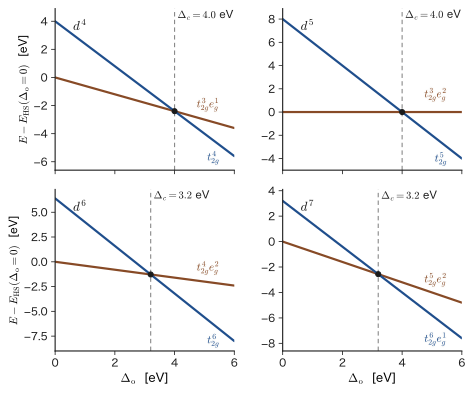
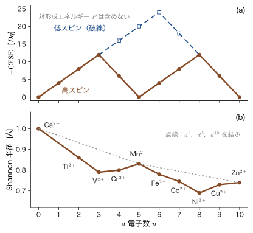
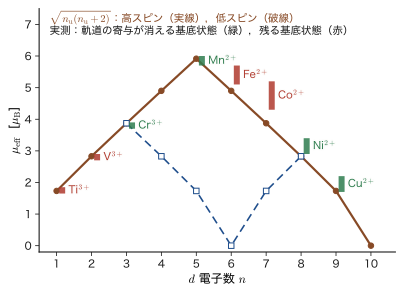
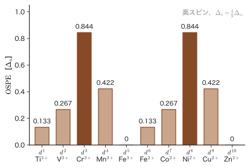

第46章$d^n$ 配置と配位子場 — 高スピン・低スピン，CFSE，スピネルのサイト選択
鉄イオン $\mathrm{Fe^{2+}}$ は，次の 2 つの錯体（complex．金属イオンのまわりに，配位子とよぶ分子やイオンが結合したもの）のどちらでも $3d$ 軌道に電子を 6 個もつ（$d^6$ 配置）．ところが，水分子が 6 個配位した $[\mathrm{Fe(H_2O)_6}]^{2+}$ は磁石に引き寄せられる（常磁性）のに，シアン化物イオンが 6 個配位した $[\mathrm{Fe(CN)_6}]^{4-}$ は磁石にほとんど反応しない（反磁性）．同じ金属イオン，同じ $d$ 電子の数なのに，なぜ磁性がこれほど違うのか．電子が 4 個ぶん「不対」になっているか，0 個なのかという違いで，その原因は，前章までに見た 2 つの準位群 $t_{2g}$（3 個）と $e_g$（2 個）へ，6 個の電子をどう詰めるかにある．この章では，電子を詰める規則と，その結果として現れる磁性・イオン半径・結晶構造の選択則を調べる．
前章（第44章）では，$d$ 電子が 1 個のときの準位を求めた．電子が 2 個以上になると，新しい問題が 2 つ現れる．第 1 は，電子を $t_{2g}$ に詰めるか $e_g$ に詰めるかというどこに入れるかの問題である．古典物理の感覚では，階段の低い段から順に玉を置くだけの話で，答えは「エネルギーの低い準位から順に」に決まってしまう．量子力学では，これに 2 つの効果が加わる．1 つは Pauli の排他原理（1 つの軌道には逆向きのスピンの電子が 2 個まで）．もう 1 つは，スピンの向きがそろった電子は互いに避け合うために Coulomb 反発が小さくなる，という交換相互作用（第35章 35.6）である．後者には古典物理に対応するものがなく，Hund の規則（第34章 34.6）の源になっている．準位の間隔 $\Delta_o$ が小さければ Hund の規則が勝って電子は $e_g$ にもスピンをそろえて入り（高スピン），$\Delta_o$ が大きければ $e_g$ を避けて $t_{2g}$ で対を作る（低スピン）．2 つの効果の大小比べが，この章の第 1 の主題である．
第 2 は，電子の入れ方が決まると，物質の性質が決まってしまうことである．不対電子の数は磁気モーメントを決める（大学基礎物理学 第51章 51.4 の Curie の法則）．$e_g$ に電子が入るとイオン半径が大きくなり，$t_{2g}$ だけが埋まると小さくなる．$t_{2g}$ に入れたときの安定化（配位子場安定化エネルギー，CFSE）は，水和エンタルピーやイオン半径に「二重こぶ」の曲線を描く．さらに，酸化物イオンの作る四面体の隙間と八面体の隙間のどちらに金属イオンが入るかというサイト選択も，CFSE で説明できる．この選択が，磁石（フェライト）の性質と，リチウムイオン電池の正極材料（$\mathrm{LiMn_2O_4}$，$\mathrm{LiCoO_2}$，$\mathrm{LiFePO_4}$）の性質を決める．配位子の種類で $\Delta_o$ がどれだけ変わるか（分光化学系列）も，この章で整理する．
- $t_{2g}^{a}e_g^{b}$ 配置の書き方と，$d^1$ から $d^{10}$ までの全配置（不対電子数，スピン量子数 $S$，CFSE，スピンのみの磁気モーメント，基底項）．$d^4$〜$d^7$ だけが 2 通りの配置（高スピンと低スピン）をもつこと
- Hund の規則と $\Delta_o$ の競合．電子対の 3 種類（同じ軌道 $U_0$，別軌道・逆スピン $U_0-2J$，同スピン $U_0-3J$）に基づく会計で対形成エネルギー $P$ を求め，$\Delta_o\lt P$ で高スピンとなることを導く．スピンクロスオーバー
- CFSE $=(-4n_t+6n_e)Dq+(\text{余分な対の数})P$ と，その二重こぶ．イオン半径・水和エンタルピー・Irving–Williams 系列への現れ方．$\mathrm{cm^{-1}}$，eV，$\mathrm{kJ/mol}$ の換算．CFSE の限界
- 分光化学系列（配位子と金属イオン）と代表的な $[\mathrm{M(L)_6}]$ の $\Delta_o$．点電荷モデルでは系列が説明できない理由
- 磁気モーメント $\mu_{\mathrm{eff}}=\sqrt{n_{\mathrm u}(n_{\mathrm u}+2)}\,\mu_{\mathrm B}$，Curie 定数 $\mu_0N_{\mathrm A}\mu_{\mathrm B}^2/(3k_{\mathrm B})=1.5714\times10^{-6}\ \mathrm{m^3\,K\,mol^{-1}}$，軌道角運動量の消失（$A$，$E$ 基底状態と $T$ 基底状態の違い）
- スピネル $\mathrm{AB_2O_4}$ の構造（四面体席 8a，八面体席 16d），正スピネルと逆スピネル，八面体席優先エネルギー（OSPE）の表，$\mathrm{NiFe_2O_4}$，$\mathrm{Fe_3O_4}$，$\mathrm{ZnCr_2O_4}$，$\mathrm{Mn_3O_4}$ のサイト選択，$\mathrm{Fe_3O_4}$ のフェリ磁性（$4\mu_{\mathrm B}$），電池材料 $\mathrm{LiMn_2O_4}$，$\mathrm{LiCoO_2}$，$\mathrm{LiFePO_4}$
もとにしたノート：本章はノートにない内容を補った章である．関連するノート：望月泰英『物理学ノート 量子力学3』 pp. 50–55（Coulomb 積分と交換積分），pp. 65–68（配位子場理論）．
46.1 電子を $t_{2g}$ と $e_g$ に詰める — $d^n$ 配置の一覧
46.1.1 $t_{2g}^{a}e_g^{b}$ 配置の書き方
前章（第44章 44.3）で見たように，八面体の場では 5 個の $d$ 軌道が 3 重の $t_{2g}$（$d_{xy},d_{yz},d_{zx}$）と 2 重の $e_g$（$d_{z^2},d_{x^2-y^2}$）に分かれ，1 電子の準位は，重心を 0 として $$ E(t_{2g})=-4Dq=-\tfrac25\Delta_o,\qquad E(e_g)=+6Dq=+\tfrac35\Delta_o,\qquad \Delta_o=10Dq $$ である．電子のスピンを考えると，1 つの空間軌道には，上向き（$\uparrow$，$\alpha$）と下向き（$\downarrow$，$\beta$）の 2 つのスピン軌道がある．したがって $t_{2g}$ には 6 個，$e_g$ には 4 個，合計 10 個のスピン軌道があり，Pauli の排他原理により，1 つのスピン軌道には電子は 1 個しか入れない（第33章で Slater 行列式が同じスピン軌道を 2 度含むと 0 になることを見た）．
定義46.1 $t_{2g}^{a}e_g^{b}$ 配置
$n$ 個の $d$ 電子のうち $a$ 個が $t_{2g}$ 軌道に，$b$ 個が $e_g$ 軌道に入っている状態を，配置（electron configuration）$t_{2g}^{a}e_g^{b}$（$a+b=n$，$0\le a\le6$，$0\le b\le4$）という．$n=0,1,\dots,10$ の $d^n$ 配置を，全体として単に「$d^n$」と書く．
ここで「配置」という言葉には，注意が要る．1 つの配置 $t_{2g}^{a}e_g^{b}$ には，電子をどの軌道にどのスピンで入れるかという多くの可能性が含まれており，電子間の反発（Coulomb 反発）はそれらのエネルギーを少しずつ違う値に分ける（$d^2$ では 45 個の状態がある．第47章）．この章では，まず「電子は独立に 1 電子準位に入る」という描像に，電子対の反発を会計として加える粗い扱い（46.2 節）で，配置の選択と物質の性質の関係を調べる．多電子項の精密な扱いは次章に回す．
電子を詰める規則は，原子の電子配置（第34章 34.1）と同じである．
- Pauli の排他原理：1 つのスピン軌道に電子は 1 個まで．すなわち 1 つの空間軌道に入る電子は 2 個まで，しかも 2 個のときはスピンが逆向き．
- 構成原理：エネルギーの低い準位から順に詰める．八面体では $\Delta_o\gt0$ なので $t_{2g}$ が先である．
- Hund の規則（第34章 34.6）：エネルギーが等しい（縮退した）軌道が複数あるときは，できるだけ別々の軌道に，スピンの向きをそろえて入れる．
規則 3 の物理的な根拠は，スピンの向きがそろった電子は，Pauli の原理のために空間的に互いを避ける（Fermi 孔．第33章 33.6.7：同じスピンの電子は同じ位置に来られない）ので Coulomb 反発が小さくなる，ということである．別々の軌道に入った 2 電子の反発エネルギーは，同じスピンなら $U'-J$，逆スピンなら $U'$ である（$U'$ は第35章の $U_{ab}$ にあたり，同じ軌道に逆スピンで入った対の反発 $U_0$ とは別の量である．46.2 節で整理する．第35章 35.3 の定理35.2 (4)，35.6）．$J$ が大きいほど，スピンをそろえるほうが得になる．
結晶場があると，規則 2 と規則 3 が衝突する．$t_{2g}$ 軌道を先に詰めるのが規則 2，縮退した軌道にスピンをそろえて入れるのが規則 3 である．$d^1,d^2,d^3$ では，$t_{2g}$ の 3 つの軌道に 1 個ずつ，同じ向きのスピンで入れれば，2 つの規則は両立する．4 個目の電子から様子が変わる．
46.1.2 $d^1$ から $d^{10}$ まで — 高スピンと低スピン
4 個目の電子の行き先は，2 通りある．(i) $t_{2g}$ のすでに 1 個入っている軌道に，逆向きのスピンで入れる（$t_{2g}^4$）．$t_{2g}$ にとどまるので結晶場のエネルギーは得だが，電子を対にするための反発エネルギーを払う．(ii) 上の準位 $e_g$ に，同じ向きのスピンで入れる（$t_{2g}^3e_g^1$）．結晶場のエネルギーは $\Delta_o$ だけ損だが，スピンがそろったままなので交換エネルギーの得を保てる．どちらが安定かは，$\Delta_o$ と電子を対にする代償の大小で決まる（46.2 節）．
定義46.2 高スピンと低スピン
同じ $d^n$ で $e_g$ に電子が入る配置（不対電子数が最大の配置）を高スピン（high spin，HS），$t_{2g}$ を優先して詰めた配置（不対電子数が少ない配置）を低スピン（low spin，LS）という．弱い場の配位子では高スピン，強い場の配位子では低スピンになる．
$d^1,d^2,d^3$ と $d^8,d^9,d^{10}$ では，$\Delta_o$ の大小によらず配置が 1 通りに決まる．$d^4$ から $d^7$ だけが，高スピンと低スピンの 2 通りをとり得る．図46.1 に全配置を描く．$d^8$ を例にすると，$t_{2g}$ は 6 個のスピン軌道がすべて埋まり，残りの 2 個は $e_g$ の 2 つの軌道に別々に，同じ向きのスピンで入る．別の入れ方，たとえば 2 個を $e_g$ の同じ軌道に対にして入れる配置は，対の反発を余分に払うだけで得るものがなく，$t_{2g}$ の電子を 1 個 $e_g$ に上げる配置は $\Delta_o$ を余分に払うので，どちらも損である．
表46.1 に，各配置の不対電子数 $n_{\mathrm u}$，全スピン $S=n_{\mathrm u}/2$，配位子場安定化エネルギー（CFSE．46.3 節），スピンのみの磁気モーメント $\mu_{\mathrm{so}}=\sqrt{n_{\mathrm u}(n_{\mathrm u}+2)}\,\mu_{\mathrm B}$（46.5 節），基底項をまとめる．各量は，46.3 節・46.5 節で導くので，ここでは表の読み方だけを述べる．「CFSE」の列は，$e_g$ と $t_{2g}$ への電子の配分だけで決まる $(-4a+6b)\,Dq$ で，対形成のエネルギー $P$ は別に「余分な対の数」の列に示した．
| $n$ | 配置 | HS／LS | $n_{\mathrm u}$ | $S$ | CFSE（$Dq$，$P$ を除く） | 余分な対の数 | $\mu_{\mathrm{so}}/\mu_{\mathrm B}$ | 基底項 |
|---|---|---|---|---|---|---|---|---|
| 1 | $t_{2g}^1$ | — | 1 | 1/2 | $-4$ | 0 | 1.73 | ${}^2T_{2g}$ |
| 2 | $t_{2g}^2$ | — | 2 | 1 | $-8$ | 0 | 2.83 | ${}^3T_{1g}$ |
| 3 | $t_{2g}^3$ | — | 3 | 3/2 | $-12$ | 0 | 3.87 | ${}^4A_{2g}$ |
| 4 | $t_{2g}^3e_g^1$ | HS | 4 | 2 | $-6$ | 0 | 4.90 | ${}^5E_g$ |
| $t_{2g}^4$ | LS | 2 | 1 | $-16$ | 1 | 2.83 | ${}^3T_{1g}$ | |
| 5 | $t_{2g}^3e_g^2$ | HS | 5 | 5/2 | $0$ | 0 | 5.92 | ${}^6A_{1g}$ |
| $t_{2g}^5$ | LS | 1 | 1/2 | $-20$ | 2 | 1.73 | ${}^2T_{2g}$ | |
| 6 | $t_{2g}^4e_g^2$ | HS | 4 | 2 | $-4$ | 0 | 4.90 | ${}^5T_{2g}$ |
| $t_{2g}^6$ | LS | 0 | 0 | $-24$ | 2 | 0 | ${}^1A_{1g}$ | |
| 7 | $t_{2g}^5e_g^2$ | HS | 3 | 3/2 | $-8$ | 0 | 3.87 | ${}^4T_{1g}$ |
| $t_{2g}^6e_g^1$ | LS | 1 | 1/2 | $-18$ | 1 | 1.73 | ${}^2E_g$ | |
| 8 | $t_{2g}^6e_g^2$ | — | 2 | 1 | $-12$ | 0 | 2.83 | ${}^3A_{2g}$ |
| 9 | $t_{2g}^6e_g^3$ | — | 1 | 1/2 | $-6$ | 0 | 1.73 | ${}^2E_g$ |
| 10 | $t_{2g}^6e_g^4$ | — | 0 | 0 | $0$ | 0 | 0 | ${}^1A_{1g}$ |
HS の CFSE の列（$-4,-8,-12,-6,0,-4,-8,-12,-6,0$）が，前章の例題44.5（表44.2）と一致することを確かめてほしい．$d^n$ と $d^{n+5}$ で CFSE が等しいのは，$d^5$（高スピン）が重心則により 0 だからである．不対電子数は，高スピンでは $n_{\mathrm u}=n$（$n\le5$），$10-n$（$n\ge5$）である．
46.1.3 基底項の記号 ${}^5T_{2g}$ などを読む
表46.1 の最後の列は多電子状態の名前で，第34章 34.2の項記号 ${}^{2S+1}L$ の，結晶場中の対応物である．左上の数字 $2S+1$ はスピン多重度，文字 $A,E,T$ は軌道部分の縮退度（$A$：縮退なし，$E$：2 重，$T$：3 重．第45章の Mulliken 記号），添字 $1,2$ と $g$ は，群の表現の細かい区別である．1 電子の軌道は小文字（$t_{2g}$，$e_g$），多電子の状態は大文字（$T_{2g}$，$E_g$）で書く約束である．
記号：$A$，$E$，$T$ の見分け方（高スピン配置）
記号の文字を決める簡単な数え方がある．同じ向きのスピンで軌道を 1 つずつ占有した殻（半閉殻）や完全に埋まった殻（閉殻）は，空間部分がただ 1 通りなので縮退がない．したがって，たとえば $t_{2g}^3$（3 個とも上向き）は $A$，$t_{2g}^6$ も $A$ である．これに電子が 1 個（または正孔が 1 個）余分にあると，その置き場所の数が縮退度になる．$t_{2g}$ に「余分な 1 個」（$t_{2g}^1$，$t_{2g}^4$ の下向きの 1 個，$t_{2g}^5$ の正孔）があれば 3 通りなので $T$，$e_g$ に余分な 1 個（$e_g^1$，$e_g^3$ の正孔）があれば 2 通りなので $E$ である．同じスピンの 2 電子を $t_{2g}$ の 3 軌道に入れる（$t_{2g}^2$）と，置き方が $3$ 通りなので $T$ である．この数え方で，表46.1 の文字 $A,E,T$ がすべて再現される（例：$d^4$ 高スピン $t_{2g}^3e_g^1$ は $A\times E=E$，$d^6$ 高スピン $t_{2g}^3(\uparrow)\,t_{2g}^1(\downarrow)\,e_g^2$ は $T$）．添字 $1,2$ を決めるには，第45章の直積が必要になる．
この文字は 46.5 節で重要になる．基底状態が $A$ か $E$ なら軌道の縮退がなく（または軌道角運動量が結晶場で消え），磁気モーメントはスピンの寄与にほぼ限られる．$T$ なら，軌道角運動量が残って磁気モーメントに寄与する．
基底項が $E_g$ の配置（$d^4$ の高スピン ${}^5E_g$，$d^7$ の低スピン ${}^2E_g$，$d^9$ の ${}^2E_g$）は，$e_g$ 軌道に電子が奇数個入っていて軌道が縮退しているので，Jahn–Teller 効果（第44章 44.6）で八面体が強くひずむ．$\mathrm{Mn^{3+}}$，$\mathrm{Cr^{2+}}$，$\mathrm{Cu^{2+}}$ の，軸方向に長い八面体がその例である．このひずみは，46.3 節（$\mathrm{Cu^{2+}}$ と Irving–Williams 系列）と 46.6 節（$\mathrm{Mn^{3+}}$，$\mathrm{Mn_3O_4}$，$\mathrm{LiMn_2O_4}$）で効いてくる．
例題46.1 $\mathrm{Co^{2+}}$（$d^7$）の高スピン配置と低スピン配置
八面体の場の $\mathrm{Co^{2+}}$ について，高スピンと低スピンの配置を $t_{2g}^{a}e_g^{b}$ の形で書き，それぞれの不対電子数 $n_{\mathrm u}$，$S$，スピンのみの磁気モーメント，電子の配分による $Dq$ 単位の CFSE を求めよ．
解答 $\mathrm{Co^{2+}}$ は $3d^7$ である．高スピン：Hund の規則で，5 個まで同じ向きのスピンで 5 つの軌道に 1 個ずつ入れ（$t_{2g}$ に 3 個，$e_g$ に 2 個），残りの 2 個を $t_{2g}$ の 2 つの軌道に逆向きのスピンで入れる．配置は $t_{2g}^5e_g^2$．$t_{2g}$ の 3 軌道のうち 2 つは対，1 つは 1 個だけで，不対電子は $t_{2g}$ に 1 個，$e_g$ に 2 個で，$n_{\mathrm u}=3$，$S=3/2$．スピンのみの磁気モーメントは $\sqrt{3\times5}=\sqrt{15}=3.87\,\mu_{\mathrm B}$．CFSE は $(-4)\times5+6\times2=-20+12=-8\,Dq$．低スピン：$t_{2g}$ を先に埋めて 6 個，残りの 1 個が $e_g$：$t_{2g}^6e_g^1$．不対電子は $e_g$ の 1 個だけで，$n_{\mathrm u}=1$，$S=1/2$，磁気モーメントは $\sqrt{1\times3}=1.73\,\mu_{\mathrm B}$．CFSE は $(-4)\times6+6\times1=-24+6=-18\,Dq$．電子の配分による安定化は，高スピンが $-8Dq$，低スピンが $-18Dq$ である．ただし低スピンは，高スピンより $t_{2g}$ の対が 1 組多く，その反発エネルギー $P$ を別に払う（46.2 節）．したがって $\mathrm{CFSE}_{\mathrm{LS}}=-18Dq+P$ となる．
例題46.2 $d^8$ に高スピン・低スピンの区別がないのはなぜか
(1) $\mathrm{Ni^{2+}}$（$d^8$）の八面体錯体は，$\Delta_o$ がどれだけ大きくなっても不対電子を 2 個もつ．$e_g^2$ の 2 電子を対にして 1 つの $e_g$ 軌道に入れる配置（$t_{2g}^6e_g^2$ の，$e_g$ 内で対にした状態）は，なぜ不利なのか．(2) 別の問いとして，$d^8$ で低スピンが現れる例に平面四配位の錯体がある．軸方向の配位子がないときの準位（第44章 44.5・44.6 節）から，その理由を説明せよ．
解答 (1) $t_{2g}^6$ はすべて埋まっているので，残る 2 電子は $e_g$ に入るしかない．$e_g$ の 2 つの軌道にスピンをそろえて入れた配置と，1 つの軌道に対にして入れた配置を比べる．2 つの $e_g$ 軌道は縮退している（エネルギーが等しい）ので，1 電子のエネルギー $+0.6\Delta_o\times2$ は同じである．違いは電子間の反発だけで，別の軌道に同じスピンで入れば $U'-J$，同じ軌道に対で入れば $U_0$ で，46.2 節で示すように $U_0\gt U'-J$ である．したがって対にするのは損だけで得はない．つまり，「$e_g$ を避けて $t_{2g}$ に詰める」余地がそもそもなく，$d^8$ の配置は 1 通りに決まる．(2) 平面四配位（正方平面）では，軸方向の配位子がないので $d_{x^2-y^2}$ 軌道だけが配位子に向かって大きく上がり（44.5・44.6 節），8 個の電子を $d_{x^2-y^2}$ 以外の 4 つの軌道に対で詰めて，$d_{x^2-y^2}$ を空にするほうが安定になる．この配置は反磁性で，$\mathrm{Pd^{2+}}$，$\mathrm{Pt^{2+}}$，強場配位子の $\mathrm{Ni^{2+}}$ の錯体（例：$[\mathrm{Ni(CN)_4}]^{2-}$）で見られる．
46.2 Hund の規則と $\Delta_o$ の競合 — 対形成エネルギーと高スピン・低スピン
46.2.1 電子を 1 つ動かしたときの損得
$d^4$ を例に，高スピン $t_{2g}^3e_g^1$ と低スピン $t_{2g}^4$ を比べる．低スピンは，高スピンから電子を 1 個，$e_g$ から $t_{2g}$ へ移して，$t_{2g}$ の 1 つの軌道を対にした状態である．移した電子は $\Delta_o$ だけ低い準位に移るので，1 電子エネルギーは $\Delta_o$ だけ得をする．その代わり，電子を対にするために，電子間反発が増える．この増加分（対を 1 組余分に作るのに必要なエネルギー）を対形成エネルギー（pairing energy）$P$ と呼ぶ．すると，低スピンと高スピンのエネルギー差は，
\begin{equation} E_{\mathrm{LS}}-E_{\mathrm{HS}}=-\Delta_o+P \qquad(d^4) \label{eq:46-d4} \end{equation}となる．$\Delta_o\gt P$ なら低スピン，$\Delta_o\lt P$ なら高スピンが安定である．この「$\Delta_o$ と $P$ の比べ合い」が，高スピン・低スピンの判定の本質である．$d^5$，$d^6$，$d^7$ でも，高スピンから低スピンへ移るときに動く電子の数と，増える対の数は同じ数になり，式 \eqref{eq:46-d4} の $-\Delta_o+P$ が，その数の倍になる（46.2.3 節）．以下では，$P$ が何で決まるかを，第VII部の $U$ と $J$ から組み立てる．
46.2.2 会計規則 — 電子対の 3 種類
第35章で，1 つの Slater 行列式で書ける多電子状態のエネルギーは，スピン軌道 $a,b$ の 1 電子エネルギー $\varepsilon_a\equiv h_{aa}$（運動エネルギー，核との引力，ここでは結晶場の和）と，Coulomb 積分 $U_{ab}$，交換積分 $J_{ab}$ を使って書けることを見た（第35章 35.7．Szabo–Ostlund の $J$，$K$ との対応は35.3 節の囲み）．
定理46.1 1 つの Slater 行列式のエネルギー（会計規則）
占有されたスピン軌道の集合 $\{a\}$ からなる Slater 行列式のエネルギーは，電子対の足し合わせ \begin{equation} E=\sum_{a}\varepsilon_a+\sum_{a\lt b}\bigl(U_{ab}-J_{ab}\bigr) \label{eq:46-acct} \end{equation} で与えられる．$a\lt b$ は，占有されたスピン軌道の対を 1 組ずつ数えることを表す．交換積分はスピンが平行な対だけに残る：$J_{ab}=\delta_{s_as_b}J_{pq}$（第35章 35.3，$p,q$ は空間軌道）．
式 \eqref{eq:46-acct} の第 2 項は，電子対 1 組ごとの反発エネルギーの合計である．$d$ 殻の 5 つの軌道の間では，$U_{ab}$ と $J_{ab}$ の値が軌道のペアごとに少しずつ違う．そこで，この章では，ペアの種類で 3 通りに分類して，それぞれに 1 つの代表値を割り当てる粗い扱いを使う（関連シミュレーター「多電子状態と配位子場」の解説の §3 と同じ会計）．
定義46.3 電子対の 3 種類（$U_0$，$J$）
同じ $d$ 殻の 2 電子について，反発エネルギーを次の 3 種類とする（図46.2）．
- 同じ軌道に，逆向きのスピンで入った対：$U_0$．
- 別の軌道に，逆向きのスピンで入った対：$U'=U_0-2J$．
- 別の軌道に，同じ向きのスピンで入った対：$U'-J=U_0-3J$（$J\gt0$ は交換積分の代表値）．
3 つの値の関係を補足する．(3) は，(2) に交換積分による $-J$ が加わったもの（式 \eqref{eq:46-acct} の $-J_{ab}$）にすぎない．(2) が $U_0-2J$ であるという関係（Kanamori の関係）は，球対称な原子の殻では，軌道を取り替えても（実軌道を使っても複素軌道を使っても）全エネルギーが変わらない，という要請から出る．$p$ 殻では厳密に成り立つことを第34章 34.5 節で見た．そこでは，同じ軸の $p$ 軌道の Coulomb 積分が $U_{zz}=F_0+4F_2$，垂直な軸のものが $U_{xz}=F_0-2F_2$，交換積分が $J_{xz}=3F_2$ で，確かに $U_{xz}=U_{zz}-2J_{xz}$ である．$d$ 殻では $F_0,F_2,F_4$ がすべて現れ，軌道のペアごとに値が違うので，$U'=U_0-2J$ は近似（平均的な値）である．また，同じ軌道に入る 2 電子は必ず逆向きなので，$U_0$ には交換積分がない．
この $U$ と $J$ は，密度汎関数理論（AD 07）の DFT+$U$ 法が遷移金属酸化物の $3d$ 軌道に与えるパラメータ（Hubbard の $U$ と Hund 結合の $J$．有効な値は $U_{\mathrm{eff}}=U-J$ と書かれる）と同じ種類の量である．$\Delta_o$ と $U$，$J$ の比べ合いは，マテリアル計算科学（AD 05）で遷移金属化合物の電子状態を調べるときにも出発点になる．
46.2.3 臨界の $\Delta_o$ — 高スピンと低スピンが入れ替わる点
1 電子エネルギーを $\varepsilon(t_{2g})=-0.4\Delta_o$，$\varepsilon(e_g)=+0.6\Delta_o$ として，式 \eqref{eq:46-acct} に 3 種類の電子対を数えて入れる．電子 $n$ 個の配置には $n(n-1)/2$ 組の電子対があり，そのうち，同じ軌道の逆スピンの対の数を $N_0$，別の軌道で逆スピンの対の数を $N_{\mathrm{op}}$，別の軌道で同スピンの対の数を $N_{\mathrm{ss}}$ とする（$N_0+N_{\mathrm{op}}+N_{\mathrm{ss}}=n(n-1)/2$）．数え方の規則は次のとおりである．上向きスピンの電子が $N_\uparrow$ 個，下向きスピンの電子が $N_\downarrow$ 個，同じ軌道に対で入っている軌道が $N_0$ 個あるとする．同スピンの対はすべて別の軌道にあるので $N_{\mathrm{ss}}=\binom{N_\uparrow}{2}+\binom{N_\downarrow}{2}$．逆スピンの対は $N_\uparrow N_\downarrow$ 組あり，そのうち $N_0$ 組が同じ軌道にあるので $N_{\mathrm{op}}=N_\uparrow N_\downarrow-N_0$ である．たとえば $d^7$ の高スピン（$N_\uparrow=5$，$N_\downarrow=2$，$N_0=2$）では $N_{\mathrm{ss}}=10+1=11$，$N_{\mathrm{op}}=10-2=8$ となる．このとき，電子対の寄与は
\begin{equation} E_{\mathrm{pair}}=N_0U_0+N_{\mathrm{op}}(U_0-2J)+N_{\mathrm{ss}}(U_0-3J) =\frac{n(n-1)}{2}U_0-2J\,N_{\mathrm{op}}-3J\,N_{\mathrm{ss}} \label{eq:46-pair} \end{equation}である．右辺の第 1 項は，配置によらない $n(n-1)/2$ 組ぶんの $U_0$ で，高スピンと低スピンの差では打ち消し合う．したがって，差を決めるのは $J$ だけである．表46.2 に，$d^4$ から $d^7$ の対の数と，低スピンと高スピンの電子対の寄与の差 $\Delta E_{\mathrm{pair}}=E_{\mathrm{pair}}(\mathrm{LS})-E_{\mathrm{pair}}(\mathrm{HS})$ をまとめる．
| $n$ | 高スピン | 低スピン | $\Delta E_{\mathrm{pair}}$ | 移る電子の数 $N_{\mathrm{mv}}$ | $P=\Delta E_{\mathrm{pair}}/N_{\mathrm{mv}}$ | ||||
|---|---|---|---|---|---|---|---|---|---|
| $N_0$ | $N_{\mathrm{op}}$ | $N_{\mathrm{ss}}$ | $N_0$ | $N_{\mathrm{op}}$ | $N_{\mathrm{ss}}$ | ||||
| 4 | 0 | 0 | 6 | 1 | 2 | 3 | $5J$ | 1 | $5J$ |
| 5 | 0 | 0 | 10 | 2 | 4 | 4 | $10J$ | 2 | $5J$ |
| 6 | 1 | 4 | 10 | 3 | 6 | 6 | $8J$ | 2 | $4J$ |
| 7 | 2 | 8 | 11 | 3 | 9 | 9 | $4J$ | 1 | $4J$ |
たとえば $d^4$ では，高スピン（4 個とも同じ向き）は $N_{\mathrm{ss}}=\binom42=6$ 組の同スピンの対だけで，$E_{\mathrm{pair}}=6U_0-18J$．低スピン $t_{2g}^4$（↑↓，↑，↑）は，同じ軌道の対 1 組，別軌道・逆スピンの対 2 組（対にした ↓ と，他の 2 つの ↑），同スピンの対 3 組（3 個の ↑ の間）で，$E_{\mathrm{pair}}=U_0+2(U_0-2J)+3(U_0-3J)=6U_0-13J$．差は $\Delta E_{\mathrm{pair}}=5J$ である．一方，1 電子エネルギーの差は，$d^4,d^7$ では 1 個の電子が $e_g\to t_{2g}$ に移るので $-\Delta_o$，$d^5,d^6$ では 2 個移るので $-2\Delta_o$ である．これらをまとめると，
\begin{equation} E_{\mathrm{LS}}-E_{\mathrm{HS}}=-N_{\mathrm{mv}}\,\Delta_o+\Delta E_{\mathrm{pair}}=N_{\mathrm{mv}}\,(P-\Delta_o),\qquad P\equiv\frac{\Delta E_{\mathrm{pair}}}{N_{\mathrm{mv}}} \label{eq:46-ELSHS} \end{equation}である（$N_{\mathrm{mv}}=1,2,2,1$ は $d^4,d^5,d^6,d^7$ で $e_g$ から $t_{2g}$ へ移る電子の数で，余分にできる電子対の数に等しい）．この式の $P$ を，この会計での対形成エネルギーと定義する．表46.2 の右端のとおり，$P=5J,\,5J,\,4J,\,4J$ である．
定理46.2 高スピン・低スピンの判定
$d^4$〜$d^7$ の八面体錯体は，$\Delta_o\lt P$ のとき高スピン，$\Delta_o\gt P$ のとき低スピンが基底状態となり，切り替わりは $\Delta_c=P$ で起きる．この会計では $P=5J$（$d^4,d^5$），$4J$（$d^6,d^7$）で，$U_0$ にはよらない．
$U_0=4$ eV，$J=0.8$ eV の場合の臨界の $\Delta_o$ は，$d^4$：$5J=4.00$ eV，$d^5$：$5J=4.00$ eV，$d^6$：$4J=3.20$ eV，$d^7$：$4J=3.20$ eV となる（$\Delta_o=P$ ちょうどでは 2 つの配置のエネルギーが等しく，$\Delta_o$ がそれより大きいと低スピンが低くなる）．図46.3 は，4 つの $d^n$ について，高スピンと低スピンの全エネルギーを $\Delta_o$ の関数として描いたものである．2 本の直線の傾きは，移る電子の数 $N_{\mathrm{mv}}$ だけ違う（$d^4$，$d^7$：$\Delta_o$ あたり $-1$，$d^5$，$d^6$：$-2$）．高スピン（褐色）は $\Delta_o$ が小さい側で，低スピン（青）は大きい側で，それぞれ低い．10 個のスピン軌道から $n$ 個を選ぶすべての配置（$d^6$ なら $\binom{10}{6}=210$ 通り）のエネルギーを計算して，最低のものを探すと，$d^4$〜$d^7$ のどの場合も，2 つの配置の間で直接切り替わる（途中にスピンが中間の配置は現れない）．

この表の $P$ を，実際の錯体の値と比べておく．Huheey などの表によれば，自由イオンの対形成エネルギーは，$\mathrm{Fe^{2+}}$（$d^6$）で約 $17\,600\ \mathrm{cm^{-1}}$（$2.18$ eV），$\mathrm{Co^{3+}}$（$d^6$）で約 $21\,000\ \mathrm{cm^{-1}}$（$2.60$ eV），$\mathrm{Mn^{2+}}$（$d^5$）で約 $25\,500\ \mathrm{cm^{-1}}$（$3.16$ eV），$\mathrm{Fe^{3+}}$（$d^5$）で約 $30\,000\ \mathrm{cm^{-1}}$（$3.72$ eV）である．$d^5$ の $P$ が $d^6$ より大きいこと（$5J$ 対 $4J$），同じ $d^n$ でもイオンの電荷が大きいほど $P$ が大きいこと（軌道が縮んで $J$ が増える）は，表46.2 の傾向と合っている．一方，$U_0=4$ eV，$J=0.8$ eV から出る $P=4J=3.2$ eV は，$\mathrm{Fe^{2+}}$ の $2.2$ eV より大きい．$J=0.8$ eV は，$3d$ 電子の大きさの目安（$J\approx0.5$〜$0.9$ eV）として模型に置いた値であり，$\mathrm{Fe^{2+}}$ に合わせるなら $J\approx0.55$ eV となる．錯体の中では，共有結合で軌道が広がって $J$ が小さくなるので，実際の $P$ は自由イオンの値より小さくなる（第47章 47.5の Racah パラメータ $B$，$C$ の低下，電子雲拡大効果）．なお，本章の $J$ は単純な会計のための目安である．実際の錯体の $P$ は，多電子項のエネルギー差として Racah パラメータ $B$ と $C$ の 1 次結合で表され（第47章 47.2），本章の $J$ は，その $B$，$C$ の平均的な目安にあたる．
考察：$U_0$ が式から消えるのはなぜか
電子の配置を変えても，電子対の総数 $n(n-1)/2$ は変わらない．$U_0$ は「どの対にも共通に掛かる」量なので，配置の差では消える．配置を変えて変化するのは，「どの対が交換の得を受けるか」と「別の軌道に入る対の数」であり，それは $J$ だけで書ける．原子の多重項を調べる第47章で，Racah の $A$（すべての項に共通）が差に効かず，$B$ と $C$ だけが効くのと同じ構造である．
例題46.3 $d^6$ の全エネルギーと臨界の $\Delta_o$
$U_0=4$ eV，$J=0.8$ eV，$\varepsilon(t_{2g})=-0.4\Delta_o$，$\varepsilon(e_g)=+0.6\Delta_o$ とする．$d^6$ の高スピン $t_{2g}^4e_g^2$ と低スピン $t_{2g}^6$ の全エネルギーを $\Delta_o$ の関数として書き下し，$\Delta_o=3$ eV での値と，臨界の $\Delta_c$ を求めよ．
解答 高スピン：$t_{2g}$ に ↑↑↑ と ↓ の 4 個，$e_g$ に ↑↑．電子対は $\binom62=15$ 組．同じ軌道の対は，対になった $t_{2g}$ の軌道の ↑↓ の 1 組．同スピンの対は，5 個の ↑ の間の $\binom52=10$ 組（↓ は 1 個だけなので ↓↓ の対はない）．別の軌道で逆スピンの対は，↑ と ↓ の組 $5\times1=5$ 組から同じ軌道の 1 組を除いた 4 組．合計 $1+10+4=15$ で合う．式 \eqref{eq:46-pair} より $E_{\mathrm{pair}}=U_0+10(U_0-3J)+4(U_0-2J)=15U_0-38J$．1 電子エネルギーは $4(-0.4\Delta_o)+2(0.6\Delta_o)=-0.4\Delta_o$．よって $$E_{\mathrm{HS}}=15U_0-38J-0.4\Delta_o .$$ 低スピン：$t_{2g}$ に ↑↓ が 3 組．同じ軌道の対は 3 組，同スピンの対は ↑ の間と ↓ の間で $3+3=6$ 組，別軌道・逆スピンの対は $3\times3-3=6$ 組，合計 15．$E_{\mathrm{pair}}=3U_0+6(U_0-3J)+6(U_0-2J)=15U_0-30J$，1 電子エネルギーは $6(-0.4\Delta_o)=-2.4\Delta_o$．よって $$E_{\mathrm{LS}}=15U_0-30J-2.4\Delta_o .$$ 数値を入れる（$15U_0=60$ eV，$38J=30.4$ eV，$30J=24$ eV）と，$E_{\mathrm{HS}}=29.6-0.4\Delta_o$，$E_{\mathrm{LS}}=36-2.4\Delta_o$（単位 eV）．$\Delta_o=3$ eV では $E_{\mathrm{HS}}=28.4$ eV，$E_{\mathrm{LS}}=28.8$ eV で，高スピンが $0.4$ eV 低い．両者が等しくなる条件 $29.6-0.4\Delta_c=36-2.4\Delta_c$ から $2\Delta_c=6.4$ eV，$\Delta_c=3.2$ eV．差は $E_{\mathrm{LS}}-E_{\mathrm{HS}}=8J-2\Delta_o=2(4J-\Delta_o)$ で，式 \eqref{eq:46-ELSHS}（$N_{\mathrm{mv}}=2$，$P=4J$）と一致する．$\Delta_o\gt3.2$ eV で低スピンになる．
例題46.4 $[\mathrm{Fe(H_2O)_6}]^{2+}$ は高スピン，$[\mathrm{Fe(CN)_6}]^{4-}$ は低スピン
$\mathrm{Fe^{2+}}$（$d^6$）の対形成エネルギーを $P=17\,600\ \mathrm{cm^{-1}}$ とする．$[\mathrm{Fe(H_2O)_6}]^{2+}$ の $\Delta_o=10\,400\ \mathrm{cm^{-1}}$，$[\mathrm{Fe(CN)_6}]^{4-}$ の $\Delta_o=33\,800\ \mathrm{cm^{-1}}$ から，それぞれの基底状態の配置を判定し，スピンのみの磁気モーメントを求めよ．また，低スピンと高スピンのエネルギー差を $\mathrm{kJ/mol}$ で表せ（$1\ \mathrm{cm^{-1}}=0.011963\ \mathrm{kJ/mol}$）．
解答 $d^6$ では $N_{\mathrm{mv}}=2$ なので，式 \eqref{eq:46-ELSHS} から $E_{\mathrm{LS}}-E_{\mathrm{HS}}=2(P-\Delta_o)$．水和イオン：$\Delta_o-P=10\,400-17\,600=-7\,200\ \mathrm{cm^{-1}}\lt0$ なので高スピン $t_{2g}^4e_g^2$，$n_{\mathrm u}=4$，$\mu_{\mathrm{so}}=\sqrt{4\times6}=4.90\,\mu_{\mathrm B}$（実測は約 $5.1$〜$5.7\,\mu_{\mathrm B}$ で，$T$ 基底状態の軌道の寄与のため $4.90$ より大きい．46.5 節）．低スピンとの差は $E_{\mathrm{LS}}-E_{\mathrm{HS}}=2\times7\,200=14\,400\ \mathrm{cm^{-1}}=172\ \mathrm{kJ/mol}$ で，低スピンのほうが高い．シアノ錯体：$\Delta_o-P=33\,800-17\,600=+16\,200\ \mathrm{cm^{-1}}\gt0$ なので低スピン $t_{2g}^6$，$n_{\mathrm u}=0$，$\mu_{\mathrm{so}}=0$（反磁性）．$E_{\mathrm{LS}}-E_{\mathrm{HS}}=-2\times16\,200=-32\,400\ \mathrm{cm^{-1}}=-388\ \mathrm{kJ/mol}$ で，低スピンが $388\ \mathrm{kJ/mol}$ も低い．同じ $d^6$ で磁性がまったく違うのは，配位子が $\Delta_o$ を $3$ 倍以上（$10\,400\to33\,800$）にして，$P$ をまたいだためである．
46.2.4 スピンクロスオーバー — $\Delta_o\approx P$ のとき
$\Delta_o$ が $P$ にほぼ等しいと，高スピンと低スピンのエネルギー差 $\Delta E_{\mathrm{HL}}=E_{\mathrm{HS}}-E_{\mathrm{LS}}=N_{\mathrm{mv}}(\Delta_o-P)$ が熱エネルギー $k_{\mathrm B}T$ 程度になり，温度・圧力・光によって 2 つの状態が入れ替わる．これをスピンクロスオーバー（spin crossover，SCO）という．$\mathrm{Fe^{2+}}$ の錯体（たとえば $[\mathrm{Fe(phen)_2(NCS)_2}]$）が代表例である．固体では，$\mathrm{LaCoO_3}$ の $\mathrm{Co^{3+}}$ にも温度によるスピン状態の変化が見られるが，低スピンから中間スピンを含む状態への変化か，高スピンへの変化か，その帰属には長く議論がある．本章の会計では，中間スピンの配置は基底状態に現れない（10 個のスピン軌道から $n$ 個を選ぶすべての配置で確かめた）が，実際の錯体や固体では，共有結合による $J$ の低下などで現れ得る．
温度：高温では高スピンが現れる．理由はエントロピーである．状態の数（縮退度）を $w$ とすると，Boltzmann 分布（大学基礎物理学 第50章 50.3）では，2 つの状態にいる確率の比が $w_{\mathrm{HS}}e^{-E_{\mathrm{HS}}/k_{\mathrm B}T}:w_{\mathrm{LS}}e^{-E_{\mathrm{LS}}/k_{\mathrm B}T}$ である．$d^6$ の高スピン ${}^5T_{2g}$ は，スピンが $2S+1=5$ 重，軌道が 3 重で，全部で $5\times3=15$ 重に縮退するが，低スピン ${}^1A_{1g}$ は 1 重である．この縮退度の比による電子的なエントロピーの差は $R\ln15=22.5\ \mathrm{J\,K^{-1}\,mol^{-1}}$ である．実際の錯体では，高スピンの金属−配位子距離が長く，結合が柔らかいので，分子振動のエントロピーも加わり，全体のエントロピー差 $\Delta S$ はこの数倍になる．自由エネルギー $\Delta G=\Delta H-T\Delta S$（$\Delta H=H_{\mathrm{HS}}-H_{\mathrm{LS}}\gt0$，$\Delta S=S_{\mathrm{HS}}-S_{\mathrm{LS}}\gt0$）が 0 になる温度が $T_{1/2}=\Delta H/\Delta S$ で，高スピンの分率（$w$ の比は $\Delta S$ に含めた）は
\begin{equation} n_{\mathrm{HS}}(T)=\frac{1}{1+\exp\!\bigl[(\Delta H-T\Delta S)/RT\bigr]} \label{eq:46-sco} \end{equation}と書ける．$T\ll T_{1/2}$ で 0（低スピン），$T\gg T_{1/2}$ で 1（高スピン），$T=T_{1/2}$ でちょうど $1/2$ になる．
圧力：高スピンの金属−配位子距離は低スピンより長い（Shannon の八面体の半径は，$\mathrm{Fe^{2+}}$ で高スピン $0.78$ Å（図46.4(b)），低スピン $0.61$ Å）．圧力をかけると体積の小さい低スピンが有利になる．また，$\Delta_o\propto R_{\mathrm{ML}}^{-5}$（$R_{\mathrm{ML}}$ は金属−配位子距離で，第44章の点電荷模型では $a$ と書いた．第44章 44.4）なので，圧縮で $\Delta_o$ が増えて $P$ を上回る効果も効く．光：低温で光を当てて低スピンを高スピンへ励起し，準安定に閉じ込める現象（LIESST，light-induced excited spin state trapping）も知られている．これらは，温度・圧力・光で磁性と色が切り替わる材料（センサやメモリ素子）として研究されている．
例題46.5 スピンクロスオーバーの転移温度と高スピン分率
$\mathrm{Fe^{2+}}$ の錯体で $\Delta H=10\ \mathrm{kJ\,mol^{-1}}$，$\Delta S=60\ \mathrm{J\,K^{-1}\,mol^{-1}}$ とする（典型的な桁の仮定値）．(1) 電子的なエントロピー差 $R\ln15$ と $\Delta S$ の比を求めよ．(2) $T_{1/2}$ と，$T=100,150,200,300$ K での高スピン分率を式 \eqref{eq:46-sco} から求めよ．
解答 (1) $R=8.3145\ \mathrm{J\,K^{-1}\,mol^{-1}}$，$\ln15=2.708$ より $R\ln15=22.5\ \mathrm{J\,K^{-1}\,mol^{-1}}$．$\Delta S=60$ との比は $22.5/60=0.38$ で，電子的な寄与は全体の 4 割ほどであり，残りは分子振動などの寄与である．(2) $T_{1/2}=\Delta H/\Delta S=10\,000/60=167$ K．式 \eqref{eq:46-sco} の指数の中身は $(\Delta H-T\Delta S)/RT$．$T=100$ K：$(10\,000-6\,000)/(8.3145\times100)=4.81$，$n_{\mathrm{HS}}=1/(1+e^{4.81})=0.008$．$T=150$ K：$(10\,000-9\,000)/(1247.2)=0.80$，$n_{\mathrm{HS}}=1/(1+e^{0.80})=0.31$．$T=200$ K：$(10\,000-12\,000)/1662.9=-1.20$，$n_{\mathrm{HS}}=1/(1+e^{-1.20})=0.77$．$T=300$ K：$(10\,000-18\,000)/2494.3=-3.21$，$n_{\mathrm{HS}}=0.96$．約 $100$ K から $250$ K の範囲で，低スピンから高スピンへなだらかに移る．（実際の結晶では，分子どうしの弾性的な相互作用（協同効果）で，もっと急に切り替わる場合がある．）
注意：高スピンか低スピンかの一般的な目安
(1) $3d$ の八面体錯体では，分光化学系列（46.4 節）の弱場側の配位子（ハロゲン化物イオン，$\mathrm{H_2O}$ など）で高スピン，強場側（$\mathrm{CN^-}$，$\mathrm{CO}$，phen など）で低スピンになる．(2) 同じ配位子でも，電荷の大きい $\mathrm{M^{3+}}$ は $\Delta_o$ が大きいので $\mathrm{M^{2+}}$ より低スピンになりやすい（$\mathrm{Co^{3+}}$ は $[\mathrm{CoF_6}]^{3-}$ を除いて，ほとんどの錯体で低スピン）．ただし $P$ も電荷とともに大きくなる（$\mathrm{Fe^{3+}}$ では $30\,000\ \mathrm{cm^{-1}}$）ので，$\mathrm{Fe^{3+}}$ はシアノ錯体以外ほぼ高スピンである．(3) $4d$，$5d$ の遷移金属は，軌道が広がっているので $\Delta_o$ が $3d$ の数割大きく，$P$ は小さいため，ほとんどすべてが低スピンである．(4) 四面体錯体は，$\Delta_t=\tfrac49\Delta_o$ が小さい（第44章 44.5）ので，ほぼ常に高スピンである．(5) $d^8$ には高スピン・低スピンの別がない（例題46.2）．
関連シミュレーター：多電子状態と配位子場のタブ①で，電子を 1 個ずつ詰めて，会計の各項と高スピン⇄低スピンの切り替わりを確かめられる（解説はこちらの §3–4）．
46.3 配位子場安定化エネルギー（CFSE）— 二重こぶ
46.3.1 CFSE の定義
結晶場があることで，ある電子配置がどれだけ得をする（安定になる）かを表す量が，配位子場安定化エネルギーである．得か損かの基準は，球対称な場（すべての $d$ 軌道が同じエネルギーにある重心の位置）にとる．前章の重心則により，5 つの軌道のエネルギーの重み付きの和は 0 なので，5 個すべてに 1 個ずつ電子が入った $d^5$ の高スピンは，結晶場のエネルギーをまったく受けない．
定義46.4 配位子場（結晶場）安定化エネルギー（CFSE）
八面体の場での配置 $t_{2g}^{a}e_g^{b}$ の配位子場安定化エネルギー（ligand field stabilization energy，LFSE．結晶場安定化エネルギー（crystal field stabilization energy）ともいい，本書では CFSE と書く）を， \begin{equation} \mathrm{CFSE}=(-4a+6b)\,Dq+(\text{余分な対の数})\,P=\bigl(-0.4a+0.6b\bigr)\Delta_o+(\text{余分な対の数})\,P \label{eq:46-cfse} \end{equation} と定める．「余分な対の数」は，球対称な場での Hund の規則に従う配置（高スピン）に比べて，増えた電子対の数である．値が負のとき安定化を表す．
第 1 項は，$t_{2g}$ の電子が $-4Dq$，$e_g$ の電子が $+6Dq$ ずつ受ける 1 電子エネルギーの和である．第 2 項は，電子を $t_{2g}$ で対にするための反発エネルギーの増加分で，球対称な場の配置（$d^n$ の高スピンと同じ対の数，$d^5$ まで対なし，$d^6$ 以降で $n-5$ 組）を基準に数える．たとえば $d^6$ の低スピン $t_{2g}^6$ は 3 組の対をもち，基準は 1 組なので，余分な対は 2 組で，$\mathrm{CFSE}=-24Dq+2P$ である．高スピンの配置では余分な対がなく，$\mathrm{CFSE}=(-4a+6b)Dq$ だけになる．全配置の値は表46.1 に示した．低スピンの値は，$d^4$：$-16Dq+P$，$d^5$：$-20Dq+2P$，$d^6$：$-24Dq+2P$，$d^7$：$-18Dq+P$ である．
式 \eqref{eq:46-cfse} を使うと，高スピンと低スピンの比較が簡単に書ける．たとえば $d^6$ では，低スピンのほうが安定なのは $-24Dq+2P\lt-4Dq$，すなわち $2P\lt20Dq$ で，$P\lt10Dq=\Delta_o$ のとき，前節の判定と同じ $\Delta_o\gt P$ の条件になる．$d^4,d^5,d^7$ も同様である（各自確かめよ）．
46.3.2 エネルギーの単位の換算
分光学では，$\Delta_o$ や $P$ を波数 $\tilde\nu=1/\lambda$ の単位 $\mathrm{cm^{-1}}$ で書くことが多い（第44章 44.4）．一方，化学熱力学のエンタルピーは $\mathrm{kJ/mol}$ で書くので，換算が必要になる．1 個の光子のエネルギーは $E=hc\tilde\nu$ で，$1\ \mathrm{cm^{-1}}=100\ \mathrm{m^{-1}}$ だから，$1\ \mathrm{mol}$ あたりでは $$ 1\ \mathrm{cm^{-1}}\ \longrightarrow\ hc\,N_{\mathrm A}\times100\ \mathrm{m^{-1}} =6.626\,070\,15\times10^{-34}\times2.997\,924\,58\times10^{8}\times6.022\,140\,76\times10^{23}\times10^{2}\ \mathrm{J/mol} =11.963\ \mathrm{J/mol} $$ すなわち $1\ \mathrm{cm^{-1}}=0.011\,963\ \mathrm{kJ/mol}$ である．eV との関係は $1\ \mathrm{eV}=8065.54\ \mathrm{cm^{-1}}=96.485\ \mathrm{kJ/mol}$ である（$e_0N_{\mathrm A}=96\,485\ \mathrm{C/mol}$ から）．
| $\mathrm{cm^{-1}}$ | eV | $\mathrm{kJ/mol}$ | |
|---|---|---|---|
| $1\ \mathrm{cm^{-1}}$ | 1 | $1.2398\times10^{-4}$ | $0.011\,963$ |
| $1\ \mathrm{eV}$ | $8065.54$ | 1 | $96.485$ |
| $1\ \mathrm{kJ/mol}$ | $83.594$ | $0.010\,364$ | 1 |
例として，$\mathrm{Ni^{2+}}$（$d^8$，$t_{2g}^6e_g^2$）の CFSE は $-12Dq=-1.2\Delta_o$ である．$[\mathrm{Ni(H_2O)_6}]^{2+}$ の $\Delta_o=8\,500\ \mathrm{cm^{-1}}$ では，$-1.2\times8\,500=-10\,200\ \mathrm{cm^{-1}}$ で，$-10\,200\times0.011\,963=-122.0\ \mathrm{kJ/mol}$，$-10\,200/8065.54=-1.26$ eV である．
46.3.3 二重こぶ — 水和エンタルピー・イオン半径・錯体の安定度
$\mathrm{Ca^{2+}}$（$d^0$）から $\mathrm{Zn^{2+}}$（$d^{10}$）までの 2 価イオンを，高スピン八面体の場に置いたとき，$-\mathrm{CFSE}$（CFSE は安定化のとき負の量なので，符号を反転して安定化の大きさにしたもの）を $d$ 電子数に対して描くと，図46.4(a) のように，$d^3$ と $d^8$ に 2 つのこぶをもつ曲線になる．$d^0$，$d^5$，$d^{10}$ で 0，$d^3$ と $d^8$ で最大（$12Dq$）である．低スピンの値（破線）は，$d^4$〜$d^7$ で高スピンより大きい（$P$ を除いた値で比べている）．

CFSE は，結晶場の中でイオンが余分に得る安定化なので，CFSE の大きいイオンほど，配位子を強く引きつけて結合を縮め，結合エンタルピーを大きくする．このため，$d$ 電子の数を追って測定した物理量が，球対称な場の傾向（単調に変わる滑らかな曲線）からずれて，二重こぶの形に現れる．
- 水和エンタルピー（気体のイオンが水中で水和するときのエンタルピー変化．負の値で，絶対値が大きいほど安定）：$\mathrm{M^{2+}(g)}+6\mathrm{H_2O}\to[\mathrm{M(H_2O)_6}]^{2+}$ の水和エンタルピーは，原子番号とともに核電荷が増えてイオンが小さくなるので，静電的には単調に大きく（負に）なると予想される．実測では $\mathrm{Ca^{2+}}$（$d^0$），$\mathrm{Mn^{2+}}$（$d^5$），$\mathrm{Zn^{2+}}$（$d^{10}$）の 3 点（CFSE が 0）が滑らかな曲線の上にあり，他のイオンは CFSE のぶんだけ，その曲線より深く（負側に）ずれる．水和エンタルピー（負の量）を $d$ 電子数に対して描くと，図46.4(a) の上下を反転した，$d^3$ と $d^8$ でへこんだ二重こぶの形になる．格子エンタルピー（気体のイオンから結晶ができるときのエンタルピー変化．$\mathrm{MCl_2}$ や $\mathrm{MO}$ など）も同様である．実測の値は，例題46.7 の表46.4 で CFSE と比べる．
- イオン半径：図46.4(b) は，高スピン八面体の 2 価イオンの Shannon の有効イオン半径である．$d^0\to d^3$（$t_{2g}$ を埋める）は急に縮み，$d^4,d^5$（$e_g$ に入る）でいったん増え，$d^6\to d^8$（$t_{2g}$ を埋める）でまた縮み，$d^9,d^{10}$（$e_g$ を埋める）で増える．理由は，$t_{2g}$ の電子は配位子の間を向くので配位子から見て核電荷を遮蔽しにくく，配位子が核に近づくため半径が縮み，$e_g$ の電子は配位子のほうを向くので配位子を押し出して半径を大きくする，と理解できる．水和エンタルピー（負の量）と同じく，$d^3$ と $d^8$ のあたりでへこんだ二重こぶの形で，CFSE による結合の強まりが，イオンを小さくしている．
- 錯体の安定度：2 価の第 1 遷移系列の金属イオンの錯体は，配位子の種類によらず，安定度定数（錯体ができる平衡の平衡定数．大きいほど錯体ができやすい）が $\mathrm{Mn^{2+}}\lt\mathrm{Fe^{2+}}\lt\mathrm{Co^{2+}}\lt\mathrm{Ni^{2+}}\lt\mathrm{Cu^{2+}}\gt\mathrm{Zn^{2+}}$ の順になる．これを Irving–Williams 系列（1953 年）という．イオン半径の減少（静電的な結合の強まり）と CFSE の増加（$\mathrm{Mn^{2+}}$ の 0 から $\mathrm{Ni^{2+}}$ の $-12Dq$ へ）で $\mathrm{Mn^{2+}}$ から $\mathrm{Ni^{2+}}$ までの増加が説明される．$\mathrm{Cu^{2+}}$ ($d^9$) は，CFSE は $\mathrm{Ni^{2+}}$ より小さい（$-6Dq$）が，$e_g$ の 3 個の電子による Jahn–Teller 効果（第44章 44.6）でさらにひずんで安定化するために，ピークになる．$\mathrm{Zn^{2+}}$ ($d^{10}$) は，CFSE も Jahn–Teller のひずみもないので，$\mathrm{Cu^{2+}}$ より下がる．
例題46.6 $[\mathrm{Co(NH_3)_6}]^{3+}$ の低スピンの安定化
$\mathrm{Co^{3+}}$（$d^6$）の $P=21\,000\ \mathrm{cm^{-1}}$，$[\mathrm{Co(NH_3)_6}]^{3+}$ の $\Delta_o=22\,900\ \mathrm{cm^{-1}}$ とする．低スピンと高スピンの CFSE を $\mathrm{cm^{-1}}$ と $\mathrm{kJ/mol}$ で求め，どちらが安定かを判定せよ．
解答 低スピン $t_{2g}^6$ は，式 \eqref{eq:46-cfse} で $a=6$，$b=0$，余分な対 2 組．$\mathrm{CFSE}_{\mathrm{LS}}=-24Dq+2P=-2.4\Delta_o+2P=-2.4\times22\,900+2\times21\,000=-54\,960+42\,000=-12\,960\ \mathrm{cm^{-1}}$．$\mathrm{kJ/mol}$ では $-12\,960\times0.011\,963=-155.0\ \mathrm{kJ/mol}$．高スピン $t_{2g}^4e_g^2$ は，$a=4$，$b=2$，余分な対 0 組．$\mathrm{CFSE}_{\mathrm{HS}}=(-16+12)Dq=-4Dq=-0.4\Delta_o=-9\,160\ \mathrm{cm^{-1}}=-109.6\ \mathrm{kJ/mol}$．差は $\mathrm{CFSE}_{\mathrm{LS}}-\mathrm{CFSE}_{\mathrm{HS}}=-3\,800\ \mathrm{cm^{-1}}=-45.5\ \mathrm{kJ/mol}$ で，低スピンが安定である．この差は，式 \eqref{eq:46-ELSHS} の $2(P-\Delta_o)=2\,(21\,000-22\,900)=-3\,800\ \mathrm{cm^{-1}}$ と一致する．$\Delta_o\gt P$ なので低スピンで，$[\mathrm{Co(NH_3)_6}]^{3+}$ は反磁性である．
例題46.7 高スピン 2 価イオンの CFSE の大きさ — 二重こぶ
(1) すべての $\mathrm{M^{2+}}$ の八面体錯体が $\Delta_o=10\,000\ \mathrm{cm^{-1}}$ とすると仮定して，$\mathrm{Ni^{2+}}$ の CFSE を $\mathrm{cm^{-1}}$ と $\mathrm{kJ/mol}$ で求めよ．(2) 実測の $[\mathrm{M(H_2O)_6}]^{2+}$ の $\Delta_o$（$\mathrm{V^{2+}}$：$12\,400$，$\mathrm{Cr^{2+}}$：$14\,100$，$\mathrm{Mn^{2+}}$：$7\,800$，$\mathrm{Fe^{2+}}$：$10\,400$，$\mathrm{Co^{2+}}$：$9\,300$，$\mathrm{Ni^{2+}}$：$8\,500$，$\mathrm{Cu^{2+}}$：$12\,600\ \mathrm{cm^{-1}}$）から，各イオンの CFSE を $\mathrm{kJ/mol}$ で求め，二重こぶを確かめよ．(3) 水和エンタルピーの実測値（約）について，$\mathrm{Ca^{2+}}$，$\mathrm{Mn^{2+}}$，$\mathrm{Zn^{2+}}$ の 3 点を結ぶ折れ線（CFSE が 0 の基準線）からのずれを求め，(2) の CFSE と比べよ．
解答 (1) $\mathrm{Ni^{2+}}$ は $d^8$ で $\mathrm{CFSE}=-12Dq=-1.2\Delta_o=-12\,000\ \mathrm{cm^{-1}}$，$-12\,000\times0.011\,963=-143.6\ \mathrm{kJ/mol}$．$\mathrm{Mn^{2+}}$（$d^5$）は $(-4\times3+6\times2)Dq=0$ なので，球対称な場の値からのずれがない．(2) 高スピンの $-\mathrm{CFSE}/\Delta_o$ は $d^3,d^4,\dots,d^9$ で $1.2,\ 0.6,\ 0,\ 0.4,\ 0.8,\ 1.2,\ 0.6$ だから，表46.4 のようになる．
| イオン | $d^n$ | $\Delta_o$ $(\mathrm{cm^{-1}})$ | CFSE $(\Delta_o)$ | CFSE $(\mathrm{cm^{-1}})$ | CFSE $(\mathrm{kJ/mol})$ | 水和エンタルピー $(\mathrm{kJ/mol})$，約 | 基準線からのずれ $(\mathrm{kJ/mol})$，約 |
|---|---|---|---|---|---|---|---|
| $\mathrm{Ca^{2+}}$ | $d^0$ | — | $0$ | $0$ | $0$ | $-1590$ | $0$（基準） |
| $\mathrm{V^{2+}}$ | $d^3$ | 12 400 | $-1.2$ | $-14\,880$ | $-178.0$ | — | — |
| $\mathrm{Cr^{2+}}$ | $d^4$ | 13 900 | $-0.6$ | $-8\,340$ | $-99.8$ | — | — |
| $\mathrm{Mn^{2+}}$ | $d^5$ | 7 800 | $0$ | $0$ | $0$ | $-1850$ | $0$（基準） |
| $\mathrm{Fe^{2+}}$ | $d^6$ | 10 400 | $-0.4$ | $-4\,160$ | $-49.8$ | $-1920$ | $-30$ |
| $\mathrm{Co^{2+}}$ | $d^7$ | 9 300 | $-0.8$ | $-7\,440$ | $-89.0$ | $-2000$ | $-70$ |
| $\mathrm{Ni^{2+}}$ | $d^8$ | 8 500 | $-1.2$ | $-10\,200$ | $-122.0$ | $-2100$ | $-130$ |
| $\mathrm{Cu^{2+}}$ | $d^9$ | 12 600 | $-0.6$ | $-7\,560$ | $-90.4$ | $-2100$ | $-90$ |
| $\mathrm{Zn^{2+}}$ | $d^{10}$ | — | $0$ | $0$ | $0$ | $-2050$ | $0$（基準） |
(3) 水和エンタルピーの実測値（約，$\mathrm{kJ/mol}$．文献によって数十 $\mathrm{kJ/mol}$ 違う）の基準線は，$n=0$（$-1590$）と $n=5$（$-1850$）を結ぶ線と，$n=5$ と $n=10$（$-2050$）を結ぶ線である．後者の線は $n$ が 1 増えるごとに $-40\ \mathrm{kJ/mol}$ ずつ下がるので，$\mathrm{Ni^{2+}}$（$n=8$）の基準は $-1850-3\times40=-1970$，実測 $-2100$ とのずれは $-130\ \mathrm{kJ/mol}$ で，CFSE の $-122\ \mathrm{kJ/mol}$ と同程度である．同様に，$\mathrm{Fe^{2+}}$：$-30$（CFSE $-50$），$\mathrm{Co^{2+}}$：$-70$（$-89$），$\mathrm{Cu^{2+}}$：$-90$（$-90$．Jahn–Teller のひずみの安定化も含む）で，実測値のずれの大きさは CFSE とおおよそ一致する．
$-178$（$\mathrm{V^{2+}}$）から $0$（$\mathrm{Mn^{2+}}$）へ減り，$-122$（$\mathrm{Ni^{2+}}$）まで再び増えて，$\mathrm{Zn^{2+}}$ の $0$ に戻る二重こぶの形である．水和エンタルピーの絶対値は約 $2\times10^3\ \mathrm{kJ/mol}$ であり，最大の CFSE（約 $180\ \mathrm{kJ/mol}$）でも，その 1 割に届かない．$\mathrm{Mn^{2+}}$ と $\mathrm{Zn^{2+}}$（ともに CFSE が 0）は，球対称な場の傾向の上にのっている．（$\mathrm{Cu^{2+}}$ の値には，さらに Jahn–Teller のひずみによる安定化は含まれていない．）
46.3.4 CFSE の限界
CFSE は，傾向を説明する目安としては優れているが，全結合エネルギーの数％にすぎない．$\mathrm{Ni^{2+}}$ の水和エンタルピーは約 $-2.1\times10^3\ \mathrm{kJ/mol}$ で，CFSE（$-122\ \mathrm{kJ/mol}$）はその 6 ％程度である．水和エンタルピーの大半は，イオンと水分子の静電引力（イオン半径と電荷で決まる）や，配位子との共有結合で決まる．したがって，CFSE だけで絶対値を予測することはできず，格子エネルギー，イオン半径，共有結合と併せて考える必要がある．また，$Dq$ の値そのものには共有結合の寄与が大きい（46.4 節）．CFSE が意味をもつのは，$d$ 電子の数だけが違う物質の間の「ずれ」を比べるときである．
46.4 分光化学系列 — $\Delta_o$ の大きさを決めるもの
46.4.1 配位子の系列
八面体錯体の $\Delta_o$ は，金属イオンだけでなく配位子によっても大きく変わる．同じ金属イオンの錯体を，配位子を取り替えながら可視・紫外の吸収スペクトルで測ると（$d$–$d$ 吸収帯の位置が $\Delta_o$ に対応する．第48章），配位子を $\Delta_o$ の小さい順に並べた，金属イオンにほぼよらない順序が見いだされる．これを分光化学系列（spectrochemical series）という．槌田龍太郎が 1938 年に $\mathrm{Co^{3+}}$ などの錯体の吸収スペクトルから提案した．
法則46.1 配位子の分光化学系列（経験則）
配位子を $\Delta_o$ が大きくなる順（弱場から強場）に並べると，おおよそ次のようになる． $$ \mathrm{I^-}\lt\mathrm{Br^-}\lt\mathrm{S^{2-}}\lt\mathrm{SCN^-}\lt\mathrm{Cl^-}\lt\mathrm{NO_3^-}\lt\mathrm{F^-}\lt\mathrm{OH^-}\lt\mathrm{C_2O_4^{2-}}\lt\mathrm{H_2O}\lt\mathrm{NCS^-}\lt\mathrm{NH_3}\lt\mathrm{en}\lt\mathrm{bpy}\lt\mathrm{phen}\lt\mathrm{NO_2^-}\lt\mathrm{CN^-}\lt\mathrm{CO} $$ （$\mathrm{SCN^-}$ は S 原子で，$\mathrm{NCS^-}$ は N 原子で金属に結合する．en はエチレンジアミン，bpy は 2,2′-ビピリジン，phen は 1,10-フェナントロリン．）
代表的な $[\mathrm{M(L)_6}]$ の $\Delta_o$ を表46.5 にまとめる．値は，広く引用される分光データ（Huheey などの表）の代表値で，文献や測定条件によって数％の違いがある．
| 錯体 | $d^n$ | $\Delta_o$ $(\mathrm{cm^{-1}})$ | $\Delta_o$ (eV) | スピン状態 |
|---|---|---|---|---|
| $[\mathrm{Ti(H_2O)_6}]^{3+}$ | $d^1$ | 20 300 | 2.52 | — |
| $[\mathrm{V(H_2O)_6}]^{2+}$ | $d^3$ | 12 400 | 1.54 | — |
| $[\mathrm{Cr(H_2O)_6}]^{3+}$ | $d^3$ | 17 400 | 2.16 | — |
| $[\mathrm{CrF_6}]^{3-}$ | $d^3$ | 15 000 | 1.86 | — |
| $[\mathrm{Cr(NH_3)_6}]^{3+}$ | $d^3$ | 21 600 | 2.68 | — |
| $[\mathrm{Cr(CN)_6}]^{3-}$ | $d^3$ | 26 600 | 3.30 | — |
| $[\mathrm{Mn(H_2O)_6}]^{2+}$ | $d^5$ | 7 800 | 0.97 | H |
| $[\mathrm{Fe(H_2O)_6}]^{3+}$ | $d^5$ | 14 000 | 1.74 | H |
| $[\mathrm{Fe(H_2O)_6}]^{2+}$ | $d^6$ | 10 400 | 1.29 | H |
| $[\mathrm{Fe(CN)_6}]^{4-}$ | $d^6$ | 33 800 | 4.19 | L |
| $[\mathrm{CoF_6}]^{3-}$ | $d^6$ | 13 000 | 1.61 | H |
| $[\mathrm{Co(NH_3)_6}]^{3+}$ | $d^6$ | 22 900 | 2.84 | L |
| $[\mathrm{Co(CN)_6}]^{3-}$ | $d^6$ | 33 500 | 4.15 | L |
| $[\mathrm{Co(H_2O)_6}]^{2+}$ | $d^7$ | 9 300 | 1.15 | H |
| $[\mathrm{Ni(H_2O)_6}]^{2+}$ | $d^8$ | 8 500 | 1.05 | — |
| $[\mathrm{Ni(NH_3)_6}]^{2+}$ | $d^8$ | 10 800 | 1.34 | — |
表の値は，$d^n$ で $\Delta_o$ が 1〜4 eV（$8\,000$〜$34\,000\ \mathrm{cm^{-1}}$）に分布することを示している．これは前章で点電荷模型から見積もった値（1.25 eV 程度）の桁に合うが，配位子による違い（水から $\mathrm{CN^-}$ で 3 倍以上）は，点電荷模型では説明できない（46.4.3 節）．
46.4.2 金属イオンの系列と，酸化数・周期・配位数
同じ配位子の錯体を比べると，金属イオンによる $\Delta_o$ の順序は，おおよそ $\mathrm{Mn^{2+}}\lt\mathrm{Ni^{2+}}\lt\mathrm{Co^{2+}}\lt\mathrm{Fe^{2+}}\lt\mathrm{V^{2+}}\lt\mathrm{Fe^{3+}}\lt\mathrm{Cr^{3+}}\lt\mathrm{Co^{3+}}\lt\mathrm{Rh^{3+}}\lt\mathrm{Ir^{3+}}\lt\mathrm{Pt^{4+}}$ である（図46.5 中段．抜粋）．この並びには，3 つの規則性がある．
- 酸化数（ここではイオンの電荷）：酸化数が大きいほど $\Delta_o$ は大きい．$\mathrm{Fe^{2+}}\to\mathrm{Fe^{3+}}$ の水和イオンで $10\,400\to14\,000\ \mathrm{cm^{-1}}$ のように，電荷が大きいと金属−配位子の距離 $R_{\mathrm{ML}}$ が縮み，$\Delta_o\propto R_{\mathrm{ML}}^{-5}$（第44章 44.4）で効く．また共有結合も強まる．
- 周期：同じ族では $3d\lt4d\lt5d$ の順に大きく，各周期で数割ずつ増える．$4d$，$5d$ 軌道は $3d$ より空間的に広がっていて，配位子の軌道との重なりが大きいからである．このため，$4d$，$5d$ の錯体はほとんど低スピンになる（46.2 節）．
- 配位数（金属イオンに結合する配位子の数）：同じ金属・配位子・距離で比べると，四面体の $\Delta_t$ は八面体の $\Delta_o$ の約 $\tfrac49$（第44章 44.5）で，立方体の $\tfrac89$ より小さい．
46.4.3 点電荷模型では説明できないこと — 共有結合性
点電荷模型（第44章）では，$\Delta_o$ は配位子の電荷の大きさ $q$ に比例する．したがって，$q=1$ の $\mathrm{F^-}$ や $\mathrm{OH^-}$ は，電荷をもたない（$q=0$）$\mathrm{H_2O}$ や $\mathrm{NH_3}$，まして $\mathrm{CO}$ より大きな $\Delta_o$ を与えるはずである．実際の系列は，これと逆である．$\mathrm{CN^-}$ と $\mathrm{CO}$ が最大で，負電荷の大きい $\mathrm{I^-}$，$\mathrm{F^-}$，$\mathrm{OH^-}$ は小さい．点電荷模型は，分裂の「形」（$e_g$ が上で $t_{2g}$ が下）は正しく与えるが，大きさの系列は共有結合性が決めている．大ざっぱな理由は，分子軌道（第40章と同じ考え方）で見ると，次のようになる（詳しくは第48章）．
- $\sigma$ 結合：配位子の孤立電子対（$\sigma$ 供与）は，配位子のほうを向く $e_g$ 軌道と重なって結合性・反結合性の軌道をつくり，$e_g$ は反結合性になって持ち上がる．$t_{2g}$ は配位子の間を向くので $\sigma$ 結合には関与しない．これが $\Delta_o$ の主な源である．$\sigma$ 供与が強い配位子（$\mathrm{NH_3}$，en，$\mathrm{CN^-}$）ほど $e_g$ は高くなる．
- $\pi$ 供与：$\mathrm{F^-}$，$\mathrm{Cl^-}$，$\mathrm{OH^-}$ などは $\pi$ 対称の満ちた $p$ 軌道をもち，これが $t_{2g}$ と相互作用する．満ちた軌道どうしなので，$t_{2g}$ は反結合的に持ち上がり，$\Delta_o$ は小さくなる（弱場）．
- $\pi$ 受容：$\mathrm{CN^-}$，$\mathrm{CO}$，bpy，phen は，空の $\pi^*$ 軌道をもち，$t_{2g}$ から電子を受け取る（$\pi$ 逆供与）．$t_{2g}$ は結合的に下がり，$\Delta_o$ は大きくなる（強場）．
3 つの効果が $\Delta_o$ をどう変えるかを，図46.6 にまとめる．
図46.5 の配位子の帯の色は，この 3 つの分類に対応する．この見方は，$\mathrm{CO}$ や $\mathrm{CN^-}$ が低スピンの錯体を作り，$d^6$ で $[\mathrm{Fe(CN)_6}]^{4-}$ が極端に大きな $\Delta_o$（$33\,800\ \mathrm{cm^{-1}}$）をもつ理由も説明する．
Jørgensen の $f_{\mathrm L}\times g_{\mathrm M}$ 則
配位子と金属イオンの効果は，おおよそ積の形に分離できる（Jørgensen）： \begin{equation} \Delta_o\approx f_{\mathrm L}\times g_{\mathrm M} \label{eq:46-fg} \end{equation} $f_{\mathrm L}$ は配位子（ligand）の因子（水を 1.00 とする相対値），$g_{\mathrm M}$ は金属イオン（metal）の因子（$\mathrm{cm^{-1}}$ の単位で，水和イオンの $\Delta_o$ に等しい．46.5 節の電子の $g$ 因子とは別の量）である．この規則が成り立つなら，2 種類の金属の $\Delta_o$ の比が配位子によらない．精度は数％〜1 割程度だが，$\pi$ 受容性の強い配位子（$\mathrm{CN^-}$）では破れる（例題46.8）．
例題46.8 $f_{\mathrm L}\times g_{\mathrm M}$ 則の検証 — $\mathrm{NH_3}$ はうまくいくが $\mathrm{CN^-}$ は外れる
表46.5 の値から，$\mathrm{NH_3}$ と $\mathrm{CN^-}$ の $f_{\mathrm L}$ を，$\mathrm{Cr^{3+}}$ と他の金属から求めて比べよ．また，$f_{\mathrm L}(\mathrm{NH_3})$ から $[\mathrm{Co(NH_3)_6}]^{3+}$ の $\Delta_o$ を予測し，実測と比べよ（$[\mathrm{Co(H_2O)_6}]^{3+}$ の $\Delta_o$ は文献値 $18\,200\ \mathrm{cm^{-1}}$ とする）．
解答 $f_{\mathrm L}=\Delta_o(\mathrm{L})/\Delta_o(\mathrm{H_2O})$ である．$\mathrm{NH_3}$：$\mathrm{Cr^{3+}}$ から $21\,600/17\,400=1.24$，$\mathrm{Ni^{2+}}$ から $10\,800/8\,500=1.27$．金属を変えてもほぼ同じで，$f_{\mathrm L}(\mathrm{NH_3})\approx1.25$．これで $\mathrm{Co^{3+}}$ を予測すると，$\Delta_o\approx1.25\times18\,200=22\,750\ \mathrm{cm^{-1}}$ で，実測 $22\,900\ \mathrm{cm^{-1}}$ と 0.7 ％しか違わない．$\mathrm{CN^-}$：$\mathrm{Cr^{3+}}$ から $26\,600/17\,400=1.53$，$\mathrm{Co^{3+}}$ から $33\,500/18\,200=1.84$．金属によって 2 割も違い，$f_{\mathrm L}\times g_{\mathrm M}$ 則は成り立たない．$\pi$ 逆供与の大きさが，金属の $t_{2g}$ の電子の数やエネルギーに依存するためである．
例題46.9 $[\mathrm{Ni(H_2O)_6}]^{2+}$ から $[\mathrm{Ni(NH_3)_6}]^{2+}$ へ — 緑から青紫へ
$\mathrm{Ni^{2+}}$（$d^8$）の最低エネルギーの $d$–$d$ 吸収は，エネルギーが $\Delta_o$ に等しい（${}^3A_{2g}\to{}^3T_{2g}$）．$[\mathrm{Ni(H_2O)_6}]^{2+}$（$\Delta_o=8\,500\ \mathrm{cm^{-1}}$）と $[\mathrm{Ni(NH_3)_6}]^{2+}$（$10\,800\ \mathrm{cm^{-1}}$）について，$\Delta_o$ の増加率と，この吸収の波長を求め，水溶液に $\mathrm{NH_3}$ を加えると緑から青紫に変わる理由を，定性的に説明せよ．
解答 増加率は $10\,800/8\,500=1.27$，すなわち 27 ％．波長は $\lambda=10^7/\tilde\nu\ \mathrm{nm}$ から，$10^7/8\,500=1\,176$ nm，$10^7/10\,800=926$ nm（どちらも近赤外線で，目には見えない）．見える色は，同じ $\mathrm{Ni^{2+}}$ の，より高エネルギーの $d$–$d$ 吸収帯（${}^3A_{2g}\to{}^3T_{1g}$ の 2 本）が決める．これらの帯も同じく高エネルギー側へ動き，水和イオンでは約 $14\,000\ \mathrm{cm^{-1}}$（約 $720$ nm，赤）と約 $25\,000\ \mathrm{cm^{-1}}$（約 $400$ nm，紫）に吸収があり，中間の緑が透過する．アンミン錯体では約 $17\,500\ \mathrm{cm^{-1}}$（約 $570$ nm，黄〜橙）と約 $28\,000\ \mathrm{cm^{-1}}$（約 $355$ nm，紫外）に動き，赤い光が吸収されなくなって，透過光が青紫色になる．つまり $\Delta_o$ が 27 ％増えると，可視部の吸収帯が赤から黄へ動き，色が変わる（帯のエネルギーと $\Delta_o$ の関係は，第47章の田辺–菅野図で定量的に扱う）．
例題46.10 $\mathrm{Cr^{3+}}$ 錯体の系列と色
$[\mathrm{CrF_6}]^{3-}$（$15\,000$），$[\mathrm{Cr(H_2O)_6}]^{3+}$（$17\,400$），$[\mathrm{Cr(NH_3)_6}]^{3+}$（$21\,600$），$[\mathrm{Cr(CN)_6}]^{3-}$（$26\,600\ \mathrm{cm^{-1}}$）の $\Delta_o$ を波長と eV に換算して並べ，$d^3$ の最低エネルギーの吸収が $\Delta_o$ に等しいこと（${}^4A_{2g}\to{}^4T_{2g}$．第47章）から，この吸収が可視部にあるものについて，透過する色を推定せよ．
解答 $\lambda=10^7/\tilde\nu\ \mathrm{nm}$，$E=\tilde\nu/8065.54$ eV から，表46.6 のようになる．
| 錯体 | $\Delta_o$ $(\mathrm{cm^{-1}})$ | 波長 (nm) | エネルギー (eV) | 吸収される光 |
|---|---|---|---|---|
| $[\mathrm{CrF_6}]^{3-}$ | 15 000 | 667 | 1.86 | 赤 |
| $[\mathrm{Cr(H_2O)_6}]^{3+}$ | 17 400 | 575 | 2.16 | 黄緑 |
| $[\mathrm{Cr(NH_3)_6}]^{3+}$ | 21 600 | 463 | 2.68 | 青 |
| $[\mathrm{Cr(CN)_6}]^{3-}$ | 26 600 | 376 | 3.30 | 紫外（可視部では吸収が弱い） |
吸収される色の補色が見えるので，$[\mathrm{CrF_6}]^{3-}$（赤を吸収）は青緑に，$[\mathrm{Cr(H_2O)_6}]^{3+}$（黄緑を吸収）は青紫に，$[\mathrm{Cr(NH_3)_6}]^{3+}$（青を吸収）は黄〜橙に見えると推定できる．$[\mathrm{Cr(CN)_6}]^{3-}$ は最低エネルギーの吸収が紫外へ出てしまうので，可視部の吸収が弱く，淡い黄色である．実際の錯体の色は，$[\mathrm{CrF_6}]^{3-}$ が緑，水和イオンが紫，アンミン錯体が黄，シアノ錯体が淡黄色である．これらの色の推定は，より高エネルギーの第 2 の吸収帯（${}^4A_{2g}\to{}^4T_{1g}$）の位置にも依存するので，厳密には第47・48章の内容を要する．ここでは，配位子を分光化学系列で強場側へ替えるにつれて，$\Delta_o$ が大きくなり，吸収が長波長から短波長へ動くという傾向が，色の変化に現れることがわかれば十分である．
46.5 磁気モーメント — スピンのみの値と軌道角運動量の消失
46.5.1 スピンのみの磁気モーメント $\sqrt{n_{\mathrm u}(n_{\mathrm u}+2)}\,\mu_{\mathrm B}$
46.1〜46.2 節で決まった電子配置から，実験で測れる量を予言する最も直接の方法が，磁気モーメントである．電子 1 個の磁気モーメントは，軌道運動とスピンから $$ \hat{\bm{\mu}}=-\frac{\mu_{\mathrm B}}{\hbar}\bigl(\hat{\bm{L}}+g_{\mathrm e}\hat{\bm{S}}\bigr),\qquad g_{\mathrm e}=2.0023 $$ である（第23章 23.9，第26章 26.4．電子の磁気モーメントはスピンと逆向きで，外場との結合は $-\hat{\bm{\mu}}\cdot\bm{B}$）．$\mu_{\mathrm B}=e_0\hbar/2m_{\mathrm e}=9.274\times10^{-24}\ \mathrm{J/T}$ は Bohr 磁子である．
この節では，軌道角運動量が結晶場で消えて（46.5.3 節），磁気モーメントがスピンだけで決まる場合を考える．全スピン量子数を $S$，不対電子の数を $n_{\mathrm u}=2S$ とする．磁化率から読み取れる「有効磁気モーメント」は，$\hat{\bm{S}}^2$ の固有値 $\hbar^2S(S+1)$ から決まり（次節），
\begin{equation} \mu_{\mathrm{eff}}=g_{\mathrm e}\sqrt{S(S+1)}\,\mu_{\mathrm B}\approx2\sqrt{\frac{n_{\mathrm u}}{2}\Bigl(\frac{n_{\mathrm u}}{2}+1\Bigr)}\,\mu_{\mathrm B}=\sqrt{n_{\mathrm u}(n_{\mathrm u}+2)}\,\mu_{\mathrm B} \label{eq:46-mu} \end{equation}となる（$g_{\mathrm e}\approx2$，$S=n_{\mathrm u}/2$ とした）．これをスピンのみの値（spin-only value）$\mu_{\mathrm{so}}$ という．$n_{\mathrm u}=1,2,3,4,5$ で，$\sqrt3=1.73$，$\sqrt8=2.83$，$\sqrt{15}=3.87$，$\sqrt{24}=4.90$，$\sqrt{35}=5.92\ (\mu_{\mathrm B})$ である．
イメージ：$n_{\mathrm u}\mu_{\mathrm B}$ ではなく $\sqrt{n_{\mathrm u}(n_{\mathrm u}+2)}\,\mu_{\mathrm B}$ になる理由
古典的な磁石なら，スピン $S$ が 1 方向（$z$ 軸）に完全にそろった状態の磁気モーメントは $g_{\mathrm e}S\mu_{\mathrm B}=n_{\mathrm u}\mu_{\mathrm B}$ となる．しかし量子力学では，$\hat{\bm{S}}^2$ の固有値は $S^2$ ではなく $S(S+1)\hbar^2$ で，この差 $S\hbar^2$ は，$z$ 軸に垂直な成分 $\hat{S}_x,\hat{S}_y$ の量子ゆらぎ（$\expval{\hat{S}_x^2}=\expval{\hat{S}_y^2}=S\hbar^2/2$．第24章）に由来する．磁化率に効くのは磁気モーメントの大きさ $g_{\mathrm e}\sqrt{S(S+1)}\mu_{\mathrm B}$ であり，$n_{\mathrm u}\mu_{\mathrm B}$ より少し大きい（$n_{\mathrm u}=1$ で $1.73$ 対 $1$，$n_{\mathrm u}=5$ で $5.92$ 対 $5$）．
46.5.2 Curie の法則と Curie 定数
磁化率と磁気モーメントを結ぶ式を導く．スピン $S$ のイオンが $N$ 個，磁束密度 $B$ の中にあるとする．磁気モーメントの $z$ 成分は $\mu_z=-g\mu_{\mathrm B}m$（$m=-S,\dots,S$ はスピンの $z$ 成分の量子数，$g=g_{\mathrm e}$）で，エネルギーは $E_m=-\mu_zB=g\mu_{\mathrm B}Bm$ である．Boltzmann 分布（大学基礎物理学 第50章 50.3）での $m$ の平均値は，$\beta=1/k_{\mathrm B}T$ として，
$$ \expval{m}=\frac{\sum_m m\,e^{-\beta g\mu_{\mathrm B}Bm}}{\sum_m e^{-\beta g\mu_{\mathrm B}Bm}}\simeq-\beta g\mu_{\mathrm B}B\,\frac{1}{2S+1}\sum_{m=-S}^{S}m^2=-\frac{g\mu_{\mathrm B}B}{k_{\mathrm B}T}\,\frac{S(S+1)}{3} $$となる．ここで，$g\mu_{\mathrm B}B\ll k_{\mathrm B}T$（弱い磁場，または高温）として指数関数を $e^{-x}\simeq1-x$ で展開し，分子の $\sum_m m=0$ の項が消えることと，$\sum_{m=-S}^{S}m^2=S(S+1)(2S+1)/3$ を使った．磁化（単位体積あたりの磁気モーメント）は $M=-Ng\mu_{\mathrm B}\expval{m}=Ng^2\mu_{\mathrm B}^2S(S+1)B/(3k_{\mathrm B}T)$ で，磁化率は $\chi=\mu_0M/B$（$\lvert\chi\rvert\ll1$．大学基礎物理学 第41章 41.2）である．1 mol あたり（$N\to N_{\mathrm A}$）では，
法則46.2 Curie の法則（SI 単位）
\begin{equation} \chi_{\mathrm{mol}}=\frac{\mu_0N_{\mathrm A}\,g^2\mu_{\mathrm B}^2\,S(S+1)}{3k_{\mathrm B}T}=\frac{C_{\mathrm{Curie}}\,\mu_{\mathrm{eff}}^2}{T},\qquad C_{\mathrm{Curie}}=\frac{\mu_0N_{\mathrm A}\mu_{\mathrm B}^2}{3k_{\mathrm B}}=1.5714\times10^{-6}\ \mathrm{m^3\,K\,mol^{-1}} \label{eq:46-curie} \end{equation}ここで $\mu_{\mathrm{eff}}$ は $\mu_{\mathrm B}$ を単位とした有効磁気モーメント（$\mu_{\mathrm{eff}}^2=g^2S(S+1)$．スピンのみなら $\mu_{\mathrm{eff}}^2=n_{\mathrm u}(n_{\mathrm u}+2)$）で，$\chi_{\mathrm{mol}}$ の単位は $\mathrm{m^3/mol}$ である．
$S=1/2$，$g=2$ なら $\mu_{\mathrm{eff}}^2=3$ で，$\chi=\mu_0N\mu_{\mathrm B}^2/(k_{\mathrm B}T)$ となり，スピン 1/2 の常磁性体の Curie の法則（大学基礎物理学 第51章 51.4）と一致する．Curie 定数の数値は，$\mu_{\mathrm B}^2=8.6007\times10^{-47}\ \mathrm{J^2\,T^{-2}}$，$\mu_0N_{\mathrm A}=1.2566\times10^{-6}\times6.0221\times10^{23}=7.5676\times10^{17}$，$3k_{\mathrm B}=4.1419\times10^{-23}\ \mathrm{J/K}$ から $C_{\mathrm{Curie}}=7.5676\times10^{17}\times8.6007\times10^{-47}/4.1419\times10^{-23}=1.5714\times10^{-6}\ \mathrm{m^3\,K\,mol^{-1}}$ である．文献では cgs 単位の $C_{\mathrm{Curie}}^{\mathrm{cgs}}=N_{\mathrm A}\mu_{\mathrm B}^2/(3k_{\mathrm B})=0.12505\ \mathrm{cm^3\,K\,mol^{-1}}$ がよく使われる．$\chi_{\mathrm{mol}}^{\mathrm{SI}}\,(\mathrm{m^3/mol})=4\pi\times10^{-6}\,\chi_{\mathrm{mol}}^{\mathrm{cgs}}\,(\mathrm{cm^3/mol})$ なので，$0.12505\times4\pi\times10^{-6}=1.5714\times10^{-6}$ と一致する．
実測の磁化率を $\mu_{\mathrm{eff}}$ に直すには，$\mu_{\mathrm{eff}}=\sqrt{\chi_{\mathrm{mol}}T/C_{\mathrm{Curie}}}$ を使う（配位子などの閉殻による反磁性のぶんを補正しておく）．温度依存性が $1/T$ からずれて $\chi=C_{\mathrm{Curie}}\mu_{\mathrm{eff}}^2/(T-\theta)$（Curie–Weiss の法則）と書けるときは，$\theta\gt0$ なら磁気モーメント間に強磁性的な，$\theta\lt0$ なら反強磁性的な相互作用がある（固体物理学（AD 06）（リンク）で扱う）．
例題46.11 $\mathrm{Mn^{2+}}$（高スピン）の磁化率
$\mathrm{Mn^{2+}}$（$d^5$，高スピン）のスピンのみの磁気モーメントと，300 K での 1 mol あたりの磁化率（SI）を求めよ．cgs 単位でも表せ．
解答 $n_{\mathrm u}=5$，$S=5/2$．$\mu_{\mathrm{eff}}^2=5\times7=35$，$\mu_{\mathrm{eff}}=\sqrt{35}=5.92$．式 \eqref{eq:46-curie} より $\chi_{\mathrm{mol}}=1.5714\times10^{-6}\times35/300=1.83\times10^{-7}\ \mathrm{m^3/mol}$．cgs では $0.12505\times35/300=1.459\times10^{-2}\ \mathrm{cm^3/mol}$（$\times4\pi\times10^{-6}$ で $1.83\times10^{-7}\ \mathrm{m^3/mol}$ に戻る）．同じ計算で，$\mathrm{Fe^{3+}}$ の低スピン（$n_{\mathrm u}=1$，$\mu_{\mathrm{eff}}^2=3$）は $1.57\times10^{-8}\ \mathrm{m^3/mol}$ で，高スピンの $1/11.7$ である．磁化率の大きさで，スピン状態が区別できる．
46.5.3 軌道角運動量の消失
自由イオンでは，全角運動量 $\hat{\bm{L}}+\hat{\bm{S}}$ が磁気モーメントを決める（Landé の $g$ 因子．第26章 26.4）．しかし遷移金属イオンの錯体や固体では，測定値がスピンのみの値に近くなることが多い．これを軌道角運動量の消失（quenching）という．理由は，結晶場（配位子）の場は球対称（中心力）でなく，電子の軌道運動が配位子の配置に縛られて，$\hat{\bm{L}}$ が結晶場のハミルトニアンと交換せず保存しないためである．具体的には，次の定理が成り立つ．
定理46.3 非縮退な実の固有状態では $\langle\hat{\bm{L}}\rangle=0$
ハミルトニアンが実数（磁場やスピン軌道相互作用を含まない）で，エネルギー固有値が縮退していなければ，その固有状態は実関数にとれ，軌道角運動量の期待値は 0 になる：$\langle\hat{\bm{L}}\rangle=\bm{0}$．
証明
$\hat{H}$ が実なら，$\hat{H}\psi=E\psi$ の複素共役をとると $\hat{H}\psi^*=E\psi^*$ なので，$\psi^*$ も同じ固有値の固有関数である．縮退がなければ $\psi^*=e^{i\alpha}\psi$ で，位相を $\psi\to e^{i\alpha/2}\psi$ と選べば，$(e^{i\alpha/2}\psi)^*=e^{-i\alpha/2}e^{i\alpha}\psi=e^{i\alpha/2}\psi$ となって $\psi$ は実関数になる．実関数 $\psi$ について， $$ \expval{\hat{L}_z}=-i\hbar\int\psi\,(x\partial_y-y\partial_x)\psi\,\dd\tau=-\frac{i\hbar}{2}\int(x\partial_y-y\partial_x)(\psi^2)\,\dd\tau $$ である（$\psi\,\partial_y\psi=\tfrac12\partial_y(\psi^2)$）．部分積分（無限遠で $\psi\to0$）により，$\int x\,\partial_y(\psi^2)\dd\tau=-\int\psi^2\,\partial_y(x)\,\dd\tau=0$，同様に $\int y\,\partial_x(\psi^2)\dd\tau=0$ なので $\expval{\hat{L}_z}=0$．$\hat{L}_x,\hat{L}_y$ も同じである．
（証明終わり）
実の $d$ 軌道（$d_{xy}$ など）は，まさに実関数である．したがって，電子が1 つの実軌道を占めているだけなら，軌道角運動量はもたない．縮退した軌道のあるときは，実軌道の線形結合（複素数）をとれるので，定理46.3 は使えず，軌道角運動量が残り得る．定理46.3 は，縮退のない多電子の $A$ 基底状態にもそのまま使える（$\hat{H}$ が実なら固有関数を実にとれて，同じ証明で $\langle\hat{\bm{L}}\rangle=\bm{0}$ となる）．一方，$E$，$T$ の基底状態には縮退があり，定理は使えないので，縮退した実軌道の間の 1 次の行列要素 $\langle a|\hat{\bm{L}}|b\rangle$ そのものを調べる（以下，「1 次の軌道角運動量がない」とは，この行列要素が 0 であることをいう）．$e_g$ と $t_{2g}$ で何が起こるかを，5 つの実軌道の上で $\hat{\bm{L}}$ の行列を作って調べる．
例題46.12 実の $d$ 軌道の上の $\hat{\bm{L}}$ — $e_g$ では 0，$t_{2g}$ では $l=1$ と同じ
$\hat{L}_z=-i\hbar(x\partial_y-y\partial_x)$ を実の $d$ 軌道（$d_{xy}\propto xy$，$d_{x^2-y^2}\propto x^2-y^2$，$d_{yz}\propto yz$，$d_{zx}\propto zx$，$d_{z^2}\propto3z^2-r^2$）に作用させ，$e_g$ の 2 つの軌道の間，$t_{2g}$ の 3 つの軌道の間での $\hat{L}_z$ の行列要素を求めよ．また，$\hat{L}_z$ が $e_g$ と $t_{2g}$ をつなぐことと，その結果を説明せよ．
解答 規格化定数を含めた角度関数は $d_{xy}=\sqrt{15/4\pi}\,xy$，$d_{x^2-y^2}=\sqrt{15/16\pi}\,(x^2-y^2)$，$d_{z^2}=\sqrt{5/16\pi}\,(3z^2-r^2)$，$d_{yz}=\sqrt{15/4\pi}\,yz$，$d_{zx}=\sqrt{15/4\pi}\,zx$（$r=1$ の球面上）である（第44章 44.1）．$x\partial_y-y\partial_x$ を作用させると， $$ (x\partial_y-y\partial_x)\,xy=x^2-y^2,\qquad(x\partial_y-y\partial_x)(x^2-y^2)=-2xy-2xy=-4xy $$ だから，$\hat{L}_zd_{xy}=-i\hbar\sqrt{\tfrac{15}{4\pi}}(x^2-y^2)=-i\hbar\cdot2\,d_{x^2-y^2}$（係数比 $\sqrt{15/4\pi}\big/\sqrt{15/16\pi}=2$），$\hat{L}_zd_{x^2-y^2}=-i\hbar\sqrt{\tfrac{15}{16\pi}}(-4xy)=+2i\hbar\,d_{xy}$．同様に，$(x\partial_y-y\partial_x)\,yz=xz$，$(x\partial_y-y\partial_x)\,zx=-yz$ から $\hat{L}_zd_{yz}=-i\hbar\,d_{zx}$，$\hat{L}_zd_{zx}=+i\hbar\,d_{yz}$．また $(x\partial_y-y\partial_x)(3z^2-r^2)=0$ なので $\hat{L}_zd_{z^2}=0$．これをまとめると（単位 $\hbar$），
$$ \begin{array}{ll} \hat{L}_z\,d_{xy}=-2i\,d_{x^2-y^2}, & \hat{L}_z\,d_{x^2-y^2}=+2i\,d_{xy},\\[1mm] \hat{L}_z\,d_{yz}=-i\,d_{zx}, & \hat{L}_z\,d_{zx}=+i\,d_{yz},\qquad \hat{L}_z\,d_{z^2}=0 . \end{array} $$$e_g$ の 2 軌道（$d_{z^2},d_{x^2-y^2}$）の間の行列要素は，すべて 0 である（$\hat{L}_z$ は $d_{x^2-y^2}$ を $d_{xy}$ に，$d_{z^2}$ を 0 にする）．$\hat{L}_x,\hat{L}_y$ も同様に $e_g$ の内部の行列要素を 0 とする．たとえば $\hat{L}_x=-i\hbar(y\partial_z-z\partial_y)$ を $d_{yz}$ に作用させると，$(y\partial_z-z\partial_y)\,yz=y^2-z^2=-\tfrac12(3z^2-r^2)-\tfrac12(x^2-y^2)$ なので，規格化定数を掛けて $\hat{L}_xd_{yz}=-i\hbar\sqrt{\tfrac{15}{4\pi}}\,(y^2-z^2)=i\hbar\,(\sqrt3\,d_{z^2}+d_{x^2-y^2})$ となり，$\hat{L}_x$ は $t_{2g}$ と $e_g$ をつなぐ．すなわち，$e_g$ 軌道には，1 次の軌道角運動量がない．一方，$t_{2g}$ の 3 軌道の間では，$\hat{L}_z$ は $d_{yz}$ と $d_{zx}$ を結び，$d_{xy}$ は $t_{2g}$ の中に成分をもたない（$\hat{L}_zd_{xy}$ は $e_g$ の $d_{x^2-y^2}$ になる）．$p$ 軌道（$x,y,z$）に対しては $\hat{L}_zp_x=i\,p_y$，$\hat{L}_zp_y=-i\,p_x$ だから，$(d_{yz},d_{zx},d_{xy})$ を $(p_x,p_y,p_z)$ に対応させると，$t_{2g}$ の内部の $\hat{\bm{L}}$ の行列は，$l=1$ の行列の符号を逆にしたものになり，$t_{2g}$ は有効な軌道角運動量 $l_{\mathrm{eff}}=1$ をもつ（$\hat{\bm{L}}^2=2\hbar^2$）．結局，$\hat{\bm{L}}$ は，$e_g$ と $t_{2g}$ をつなぐ（エネルギー差 $\Delta_o$）が，$e_g$ の中では 0，$t_{2g}$ の中では $p$ 軌道と同様である．
例題46.12 の結果から，基底状態の種類ごとに次のことがいえる．
- $A$，$E$ 基底状態（$d^3$ の ${}^4A_{2g}$，$d^5$ 高スピンの ${}^6A_{1g}$，$d^8$ の ${}^3A_{2g}$，$d^9$ の ${}^2E_g$ など）：1 次の軌道角運動量がない．$e_g$ の電子は軌道角運動量をもたず，$t_{2g}$ が満ちた殻や，3 個とも同じ向きのスピンで半分満ちた殻は，空間部分がただ 1 通りで縮退がなく（46.1.3 節），軌道角運動量をもたない．磁気モーメントは，スピンのみの値に近い．わずかなずれは 2 次の摂動から生じる（下）．
- $T$ 基底状態（$d^1$ の ${}^2T_{2g}$，$d^2$ の ${}^3T_{1g}$，$d^6$ 高スピンの ${}^5T_{2g}$，$d^7$ 高スピンの ${}^4T_{1g}$ など）：$t_{2g}$ の有効な軌道角運動量 $l_{\mathrm{eff}}=1$ が残り，スピン軌道相互作用 $\lambda\hat{\bm{L}}\cdot\hat{\bm{S}}$（第25章，第26章）で 1 次から効く．準位が $\lambda$ の大きさで分裂するので，$\mu_{\mathrm{eff}}$ は温度に依存し，一般にスピンのみの値より大きくなる（ただし $d^1,d^2$ の少数電子系では，分裂した準位の熱分布のため，室温で小さくなる例もある．Kotani の理論，1949 年）．$\mathrm{Co^{2+}}$（高スピン，${}^4T_{1g}$）では $\mu_{\mathrm{eff}}=4.3$〜$5.2\,\mu_{\mathrm B}$ と，スピンのみの $3.87\,\mu_{\mathrm B}$ を大きく上回る．
$T$ 基底状態で $\mu_{\mathrm{eff}}$ がスピンのみの値より大きくなる理由．例題46.12 の結果は，$t_{2g}$ の内部で $\hat{\bm{L}}\to-\hat{\bm{l}}_{\mathrm{eff}}$（$\hat{\bm{l}}_{\mathrm{eff}}$ は $l=1$ の角運動量）と置き換えられることを意味する．したがってスピン軌道相互作用は $\lambda\hat{\bm{L}}\cdot\hat{\bm{S}}\to-\lambda\,\hat{\bm{l}}_{\mathrm{eff}}\cdot\hat{\bm{S}}$ と，符号が逆の有効な結合になる（たとえば $d^1$ は殻が半分より少なく，自由イオンなら $J=l-s$ が低いのに，$t_{2g}^1$ では $J_{\mathrm{eff}}=l_{\mathrm{eff}}+s$ のほうが低い）．この 1 次の結合のために，基底状態は軌道の 3 重の縮退とスピンの縮退の積が $\lambda$ の大きさで分裂したものになり，磁気モーメント $-\mu_{\mathrm B}(\hat{\bm{L}}+2\hat{\bm{S}})/\hbar$ のうち軌道の部分 $-\mu_{\mathrm B}\hat{\bm{L}}/\hbar=\mu_{\mathrm B}\hat{\bm{l}}_{\mathrm{eff}}/\hbar$ も $\mu_{\mathrm{eff}}$ に寄与する．$k_{\mathrm B}T\gg\lvert\lambda\rvert$（高温）の極限では，軌道とスピンが独立に寄与するとみなせて，
$$ \mu_{\mathrm{eff}}^2\approx4S(S+1)+L_{\mathrm{eff}}(L_{\mathrm{eff}}+1),\qquad L_{\mathrm{eff}}=1 $$と粗く見積もれる．$\mathrm{Co^{2+}}$（高スピン，$S=3/2$）では $4\times\tfrac32\times\tfrac52+2=15+2=17$，$\mu_{\mathrm{eff}}\approx4.1\,\mu_{\mathrm B}$，$\mathrm{Fe^{2+}}$（高スピン，$S=2$）では $24+2=26$，$\mu_{\mathrm{eff}}\approx5.1\,\mu_{\mathrm B}$ で，どちらもスピンのみの値（$3.87$，$4.90$）より大きく，実測（$4.3$〜$5.2$，$5.1$〜$5.7$）の方向に合う．実測が見積りよりさらに大きい傾向にあるのは，${}^4T_{1g}$ では弱い場で $l_{\mathrm{eff}}$ の係数が 1 でなく最大 $3/2$ になる（Figgis の $A$ 因子．$L_{\mathrm{eff}}(L_{\mathrm{eff}}+1)\to2\times(3/2)^2=4.5$ とすると $\mu_{\mathrm{eff}}\approx4.4\,\mu_{\mathrm B}$）ことや，$\lvert\lambda\rvert$（$\mathrm{Co^{2+}}$ で約 $180\ \mathrm{cm^{-1}}$）が 300 K の $k_{\mathrm B}T$（約 $208\ \mathrm{cm^{-1}}$）と同程度で，高温極限が成り立たず温度依存が現れることによる．
$A$ 基底状態でも，軌道の寄与は完全には 0 にならない．スピン軌道相互作用 $\lambda\hat{\bm{L}}\cdot\hat{\bm{S}}$ と，外場との結合 $\mu_{\mathrm B}\hat{\bm{L}}\cdot\bm{B}/\hbar$ の積が，2 次の摂動論（第27章）で，励起状態（エネルギー $\Delta_o$ 上の ${}^4T_{2g}$ など）を介して基底状態のエネルギーを変える．結果は，$g$ 因子が自由電子の値 $g_{\mathrm e}$ から \begin{equation} g=g_{\mathrm e}-\frac{8\lambda}{\Delta_o} \label{eq:46-gshift} \end{equation} とずれることである（$\lambda$ はイオンのスピン軌道結合定数．${}^4A_{2g}$，${}^3A_{2g}$ の場合の標準的な結果）．$\lambda$ は，殻が半分より少ないとき正，半分より多いとき負になる（第26章の多重項の順序と同じ）ので，$\mathrm{Cr^{3+}}$（$d^3$）では $g\lt g_{\mathrm e}$，$\mathrm{Ni^{2+}}$（$d^8$）では $g\gt g_{\mathrm e}$ となる．$\Delta_o$ が大きいほどずれは小さく，$g\to g_{\mathrm e}$ に近づく．$\mathrm{Ni^{2+}}$ の例で見積もる．$\lambda\approx-300\ \mathrm{cm^{-1}}$，$\Delta_o=8\,500\ \mathrm{cm^{-1}}$ と仮定すると，$g=2.0023+8\times300/8\,500=2.28$．これから $\mu_{\mathrm{eff}}=g\sqrt{S(S+1)}=2.28\times\sqrt2=3.2\,\mu_{\mathrm B}$ で，スピンのみの値 $2.83$ より大きく，実測の $2.9$〜$3.4\,\mu_{\mathrm B}$ の範囲に入る．
46.5.4 スピンのみの値と実測の比較
表46.7 に，代表的な 3$d$ イオンのスピンのみの値と実測値を比べる．実測値は，配位子や温度によって変わる範囲で示した（Huheey などの表の代表値）．なお，式 \eqref{eq:46-gshift} は ${}^4A_{2g}$，${}^3A_{2g}$ のような $A$ 基底状態の結果である．$\mathrm{Cu^{2+}}$（${}^2E_g$）の $g$ は，ひずみの軸方向と垂直方向で別の値 $g_\parallel$，$g_\perp$ をとり，式の形が違う（Figgis–Hitchman を参照）．
| イオン | $d^n$ | 基底項 | $n_{\mathrm u}$ | $\mu_{\mathrm{so}}$ | 実測 | 軌道の寄与 |
|---|---|---|---|---|---|---|
| $\mathrm{Ti^{3+}}$ | $d^1$ | ${}^2T_{2g}$ | 1 | 1.73 | 1.7〜1.8 | $T$（温度で変わる） |
| $\mathrm{V^{3+}}$ | $d^2$ | ${}^3T_{1g}$ | 2 | 2.83 | 2.7〜2.9 | $T$（温度で変わる） |
| $\mathrm{Cr^{3+}}$ | $d^3$ | ${}^4A_{2g}$ | 3 | 3.87 | 3.7〜3.9 | 消失 |
| $\mathrm{Mn^{2+}}$（高スピン） | $d^5$ | ${}^6A_{1g}$ | 5 | 5.92 | 5.7〜6.0 | 消失 |
| $\mathrm{Fe^{2+}}$（高スピン） | $d^6$ | ${}^5T_{2g}$ | 4 | 4.90 | 5.1〜5.7 | 残る |
| $\mathrm{Co^{2+}}$（高スピン） | $d^7$ | ${}^4T_{1g}$ | 3 | 3.87 | 4.3〜5.2 | 残る |
| $\mathrm{Ni^{2+}}$ | $d^8$ | ${}^3A_{2g}$ | 2 | 2.83 | 2.9〜3.4 | わずかに（2 次） |
| $\mathrm{Cu^{2+}}$ | $d^9$ | ${}^2E_g$ | 1 | 1.73 | 1.7〜2.2 | わずかに（2 次，$g\approx2.1$〜$2.2$） |

$A$ 基底状態（$\mathrm{Cr^{3+}}$，$\mathrm{Mn^{2+}}$）はスピンのみの値とほぼ一致し，$T$ 基底状態の高スピン $\mathrm{Fe^{2+}}$，$\mathrm{Co^{2+}}$ は，スピンのみの値より大きいずれを示す．$\mathrm{Ni^{2+}}$ は $A$ 基底状態だが，式 \eqref{eq:46-gshift} の $g$ のずれ（$g\gt g_{\mathrm e}$）のぶんだけ，スピンのみの値よりやや大きい．実測が，配置の判定（46.2 節）をどう裏付けるかは，例題46.4 で見た．$[\mathrm{Fe(H_2O)_6}]^{2+}$ は，スピンのみの値が $4.90\,\mu_{\mathrm B}$（実測は $5.1$〜$5.7\,\mu_{\mathrm B}$），$[\mathrm{Fe(CN)_6}]^{4-}$ は $0$（反磁性）で，高スピン・低スピンが磁気的に判別できる．
応用：磁気測定で配置を決める
錯体や固体の磁化率を，温度を変えて測る（Gouy 法，SQUID 磁束計，溶液中では NMR の Evans 法など）と，$\mu_{\mathrm{eff}}=\sqrt{\chi_{\mathrm{mol}}T/C_{\mathrm{Curie}}}$ から不対電子数と，軌道角運動量の残り具合がわかる．無機化学では，錯体の高スピン・低スピン・スピンクロスオーバー（46.2 節）の判定の標準的な手段である．材料では，同じ測定が，磁性酸化物の磁気構造（46.6 節）や，触媒・電池材料の遷移金属の価数（$\mathrm{Mn^{3+}}$ か $\mathrm{Mn^{4+}}$ か，など）の判定に使われる．
46.6 スピネルの四面体席・八面体席の選択
46.6.1 スピネルの構造 — 四面体席 8a と八面体席 16d
ここまでは，金属イオンを八面体の場に置いてきた．しかし，酸化物の結晶の中の金属イオンは，八面体の場に入る（酸化物イオン 6 個に囲まれる）だけでなく，四面体の場（酸化物イオン 4 個に囲まれる）にも入る．同じ結晶の中に 2 種類の席があるとき，どのイオンがどちらに入るかを決めるのが，配位子場安定化エネルギーである．この選択は，スピネル $\mathrm{AB_2O_4}$ で，もっとも典型的に現れる．名前は鉱物のスピネル $\mathrm{MgAl_2O_4}$ に由来し，磁石（フェライト），顔料（コバルトブルー $\mathrm{CoAl_2O_4}$），電池材料（$\mathrm{LiMn_2O_4}$）と，広く使われる．
構造．スピネルは立方晶（空間群 $Fd\bar{3}m$）で，格子定数 $a_{\mathrm{latt}}$ は約 $8\ \text{Å}$，単位格子に式量 $\mathrm{AB_2O_4}$ を 8 個（56 原子）含む．酸化物イオン $\mathrm{O^{2-}}$ は，立方最密充填（面心立方）の配列をとり，単位格子に 32 個ある．最密充填の隙間は，$\mathrm{O^{2-}}$ 1 個あたり，四面体空隙が 2 個，八面体空隙が 1 個あるので，単位格子には四面体空隙が 64 個，八面体空隙が 32 個ある．陽イオンは，このうち 24 個の隙間に入る．すなわち，A イオンが四面体空隙の $1/8$（64 個のうち 8 個．Wyckoff 位置（空間群の中の原子位置を分類する記号）8a），B イオンが八面体空隙の $1/2$（32 個のうち 16 個．16d）を占める（図46.8(a)，(b)）．
四面体空隙と八面体空隙に入る球の大きさの上限は，陰イオンの半径との比で $0.225$，$0.414$ である（剛体球の幾何．関連シミュレーター：結晶構造の③空隙と半径比則）．したがって，小さいイオンは四面体席に，大きいイオンは八面体席に入りやすい．しかし，実際にはイオン半径の差だけで決まらない．この点で，結晶場が効く．
定義46.5 正スピネルと逆スピネル，逆転度
2 価の陽イオン $\mathrm{A^{2+}}$ と 3 価の陽イオン $\mathrm{B^{3+}}$ からなるスピネルで，$\mathrm{A^{2+}}$ が四面体席，$\mathrm{B^{3+}}$ が八面体席にあるものを正スピネル（normal spinel）$\mathrm{A^{2+}[B^{3+}]_2O_4}$ といい，$\mathrm{B^{3+}}$ の半分が四面体席に，$\mathrm{A^{2+}}$ と残りの $\mathrm{B^{3+}}$ が八面体席にあるものを逆スピネル（inverse spinel）$\mathrm{B^{3+}[A^{2+}B^{3+}]O_4}$ という（角括弧は八面体席）．四面体席のうち $\mathrm{B}$ が占める割合を逆転度（degree of inversion）$x$ と呼び，$(\mathrm{A}_{1-x}\mathrm{B}_{x})[\mathrm{A}_{x}\mathrm{B}_{2-x}]\mathrm{O_4}$ と書く．$x=0$ が正スピネル，$x=1$ が逆スピネルで，陽イオンが完全にランダムなら $x=2/3$ である（四面体席 1 個と八面体席 2 個の計 3 席に A が 1 個，B が 2 個ばらまかれるので，四面体席が B になる確率は $2/3$）．
歴史的には，Barth と Posnjak（1932 年）が X 線回折からスピネルの陽イオン配置を示し，Verwey と Heilmann（1947 年）が多くのフェライトの陽イオンの分布を整理した．以下では，その分布が配位子場安定化エネルギーでどこまで説明できるかを調べる．
46.6.2 八面体席優先エネルギー（OSPE）
四面体の場では，前章（44.5 節）で見たように，$e$ 軌道（2 個）が下，$t_2$ 軌道（3 個）が上に来て，重心則により $E(e)=-\tfrac35\Delta_t$，$E(t_2)=+\tfrac25\Delta_t$ である．同じ配位子，同じ距離なら $\Delta_t=\tfrac49\Delta_o$ で，四面体の分裂は八面体の半分以下である．四面体席ではほぼ常に高スピンなので，四面体席の CFSE も，$e$ に $n_e$ 個，$t_2$ に $n_t$ 個の電子が入る高スピンの配置で，$\mathrm{CFSE}_{\mathrm{tet}}=\bigl(-\tfrac35n_e+\tfrac25n_t\bigr)\Delta_t$ と書ける．
定義46.6 八面体席優先エネルギー（OSPE）
同じイオンを八面体席と四面体席に置いたときの，CFSE の差 \begin{equation} \mathrm{OSPE}\equiv\mathrm{CFSE}_{\mathrm{tet}}-\mathrm{CFSE}_{\mathrm{oct}}\quad(\ge0\ \text{なら八面体席を好む}) \label{eq:46-ospe} \end{equation} を八面体席優先エネルギー（octahedral site preference energy）という（CFSE は安定化のとき負なので，OSPE が正なら八面体席が有利）．
符号の向きを整理しておく．CFSE は安定なほど負である．図46.4(a) はその符号を反転した $-\mathrm{CFSE}$（安定化の大きさ）を描いたものである．OSPE は式 \eqref{eq:46-ospe} のとおり，四面体席の CFSE から八面体席の CFSE を引いたものなので，正の値が大きいほど八面体席が有利である．
具体的に $d^3$ で計算する．八面体：$t_{2g}^3$ で $\mathrm{CFSE}_{\mathrm{oct}}=-12Dq=-1.2\Delta_o$．四面体：$e^2t_2^1$（$e$ に 2 個，$t_2$ に 1 個）で $\mathrm{CFSE}_{\mathrm{tet}}=\bigl(-\tfrac35\times2+\tfrac25\times1\bigr)\Delta_t=-0.8\Delta_t=-0.8\times\tfrac49\Delta_o=-0.356\Delta_o$．したがって $\mathrm{OSPE}=-0.356+1.2=0.844\,\Delta_o$ である．他の $d^n$ も同様に表46.8 となる．
| $d^n$ | イオンの例 | 八面体 $\mathrm{CFSE}_{\mathrm{oct}}$（$\Delta_o$） | 四面体 $\mathrm{CFSE}_{\mathrm{tet}}$（$\Delta_t$） | 四面体 $\mathrm{CFSE}_{\mathrm{tet}}$（$\Delta_o$） | OSPE（$\Delta_o$） |
|---|---|---|---|---|---|
| $d^1$ | $\mathrm{Ti^{3+}}$ | $-0.4$ | $-0.6$ | $-0.267$ | $0.133$ |
| $d^2$ | $\mathrm{V^{3+}}$ | $-0.8$ | $-1.2$ | $-0.533$ | $0.267$ |
| $d^3$ | $\mathrm{Cr^{3+}}$，$\mathrm{Mn^{4+}}$ | $-1.2$ | $-0.8$ | $-0.356$ | $0.844$ |
| $d^4$ | $\mathrm{Mn^{3+}}$ | $-0.6$ | $-0.4$ | $-0.178$ | $0.422$ |
| $d^5$ | $\mathrm{Fe^{3+}}$，$\mathrm{Mn^{2+}}$ | $0$ | $0$ | $0$ | $0$ |
| $d^6$ | $\mathrm{Fe^{2+}}$ | $-0.4$ | $-0.6$ | $-0.267$ | $0.133$ |
| $d^7$ | $\mathrm{Co^{2+}}$ | $-0.8$ | $-1.2$ | $-0.533$ | $0.267$ |
| $d^8$ | $\mathrm{Ni^{2+}}$ | $-1.2$ | $-0.8$ | $-0.356$ | $0.844$ |
| $d^9$ | $\mathrm{Cu^{2+}}$ | $-0.6$ | $-0.4$ | $-0.178$ | $0.422$ |
| $d^{10}$ | $\mathrm{Zn^{2+}}$，$\mathrm{Ga^{3+}}$ | $0$ | $0$ | $0$ | $0$ |

OSPE は，CFSE と同じ二重こぶの形をしている（$d^n$ と $d^{n+5}$ で同じ値）．$d^0$，$d^5$，$d^{10}$ では 0 で，これらのイオン（$\mathrm{Fe^{3+}}$，$\mathrm{Mn^{2+}}$，$\mathrm{Zn^{2+}}$，$\mathrm{Al^{3+}}$，$\mathrm{Mg^{2+}}$ など）は，結晶場からはどちらの席も好まない．$d^3$（$\mathrm{Cr^{3+}}$）と $d^8$（$\mathrm{Ni^{2+}}$）が，八面体席を最も強く好む．なお，表46.8 の値は $\Delta_o$ を単位にしたもので，絶対値で比べるには，それぞれのイオンの $\Delta_o$ を掛ける必要がある（例題46.13）．
例題46.13 $\mathrm{Cr^{3+}}$ と $\mathrm{Ni^{2+}}$ の OSPE
$\Delta_t=\tfrac49\Delta_o$ として，$\mathrm{Cr^{3+}}$（$d^3$，$\Delta_o=17\,400\ \mathrm{cm^{-1}}$）と $\mathrm{Ni^{2+}}$（$d^8$，$\Delta_o=8\,500\ \mathrm{cm^{-1}}$）の OSPE を，$\mathrm{cm^{-1}}$，$\mathrm{kJ/mol}$，eV で求めよ．$\mathrm{Fe^{3+}}$ の OSPE は何か．
解答 $\mathrm{Cr^{3+}}$（$d^3$）：上に示したとおり $\mathrm{OSPE}=1.2\Delta_o-0.8\times\tfrac49\Delta_o=\bigl(1.2-\tfrac{16}{45}\bigr)\Delta_o=\tfrac{38}{45}\Delta_o=0.844\Delta_o$．$\Delta_o=17\,400$ なら $0.844\times17\,400=14\,693\ \mathrm{cm^{-1}}$，$14\,693\times0.011\,963=175.8\ \mathrm{kJ/mol}$，$14\,693/8065.54=1.82$ eV．$\mathrm{Ni^{2+}}$（$d^8$）：$t_{2g}^6e_g^2$ で $\mathrm{CFSE}_{\mathrm{oct}}=-12Dq=-1.2\Delta_o$．四面体は $e^4t_2^4$ で $\mathrm{CFSE}_{\mathrm{tet}}=(-\tfrac35\times4+\tfrac25\times4)\Delta_t=-0.8\Delta_t$．$d^3$ と同じ $\tfrac{38}{45}\Delta_o$ で，$\Delta_o=8\,500$ なら $7\,178\ \mathrm{cm^{-1}}=85.9\ \mathrm{kJ/mol}=0.89$ eV．$\mathrm{Fe^{3+}}$（$d^5$）：八面体 $t_{2g}^3e_g^2$ は $-12+12=0$，四面体 $e^2t_2^3$ は $-\tfrac35\times2+\tfrac25\times3=0$ なので $\mathrm{OSPE}=0$．$\mathrm{Cr^{3+}}$ の OSPE（$14\,693\ \mathrm{cm^{-1}}$）は $\mathrm{Ni^{2+}}$ の値（$7\,178\ \mathrm{cm^{-1}}$）の約 2 倍で，係数 $\tfrac{38}{45}$ は共通だが，$\Delta_o$ が約 2 倍大きいためである．
46.6.3 予測と実際 — 正スピネルか逆スピネルか
サイトの選択は，OSPE を熱エネルギーと比べて考える．1 mol あたりの熱エネルギーは $RT=N_{\mathrm A}k_{\mathrm B}T=8.3145\times300\ \mathrm{J/mol}=2.49\ \mathrm{kJ/mol}$（300 K）で，合成温度の $1000$ K 付近では $8.3\ \mathrm{kJ/mol}$ である．
OSPE の大きいイオンほど八面体席を好むので，次の規則で正・逆を予測できる．
定理46.4 OSPE による正スピネル・逆スピネルの予測（目安）
$\mathrm{AB_2O_4}$ で，$\mathrm{A^{2+}}$ の OSPE が $\mathrm{B^{3+}}$ の OSPE より大きければ，$\mathrm{A^{2+}}$ が八面体席に入って逆スピネルに，小さければ正スピネルになる．OSPE が等しい（ともに 0）ときは，結晶場では決まらない．
| 化合物 | $\mathrm{A^{2+}}$（OSPE） | $\mathrm{B^{3+}}$（OSPE） | OSPE からの予測 | 実際 | 逆転度 $x$（約） |
|---|---|---|---|---|---|
| $\mathrm{ZnCr_2O_4}$ | $\mathrm{Zn^{2+}}$（$d^{10}$：0） | $\mathrm{Cr^{3+}}$（$d^3$：$0.844\Delta_o\approx1.5\times10^4$） | 正 | 正スピネル | 0 |
| $\mathrm{MgCr_2O_4}$ | $\mathrm{Mg^{2+}}$（0） | $\mathrm{Cr^{3+}}$（同上） | 正 | 正スピネル | 0 |
| $\mathrm{NiFe_2O_4}$ | $\mathrm{Ni^{2+}}$（$d^8$：$7\,178$） | $\mathrm{Fe^{3+}}$（$d^5$：0） | 逆 | 逆スピネル | 1 |
| $\mathrm{Fe_3O_4}$ | $\mathrm{Fe^{2+}}$（$d^6$：$0.133\Delta_o\approx1\,400$） | $\mathrm{Fe^{3+}}$（0） | 逆 | 逆スピネル | 1 |
| $\mathrm{CoFe_2O_4}$ | $\mathrm{Co^{2+}}$（$d^7$：$0.267\Delta_o\approx2\,500$） | $\mathrm{Fe^{3+}}$（0） | 逆 | 主に逆スピネル | 0.7〜0.9 |
| $\mathrm{CuFe_2O_4}$ | $\mathrm{Cu^{2+}}$（$d^9$：$0.422\Delta_o$） | $\mathrm{Fe^{3+}}$（0） | 逆 | 逆スピネル | 1 |
| $\mathrm{Mn_3O_4}$ | $\mathrm{Mn^{2+}}$（$d^5$：0） | $\mathrm{Mn^{3+}}$（$d^4$：$0.422\Delta_o$） | 正 | 正スピネル（正方ひずみ） | 0 |
| $\mathrm{MnFe_2O_4}$ | $\mathrm{Mn^{2+}}$（0） | $\mathrm{Fe^{3+}}$（0） | 決まらない | 主に正スピネル | 0.2 |
| $\mathrm{MgFe_2O_4}$ | $\mathrm{Mg^{2+}}$（0） | $\mathrm{Fe^{3+}}$（0） | 決まらない | ほぼ逆スピネル | 0.9 |
| $\mathrm{MgAl_2O_4}$ | $\mathrm{Mg^{2+}}$（0） | $\mathrm{Al^{3+}}$（0） | 決まらない | ほぼ正スピネル | 0.1〜0.3 |
| $\mathrm{ZnFe_2O_4}$ | $\mathrm{Zn^{2+}}$（0） | $\mathrm{Fe^{3+}}$（0） | 決まらない | 正スピネル | 0 |
| $\mathrm{CoAl_2O_4}$ | $\mathrm{Co^{2+}}$（$d^7$：$0.267\Delta_o\approx2\,500$） | $\mathrm{Al^{3+}}$（0） | 逆 | ほぼ正スピネル（予測が外れる） | 小さい |
OSPE が働く例（$\mathrm{ZnCr_2O_4}$，$\mathrm{NiFe_2O_4}$，$\mathrm{Fe_3O_4}$，$\mathrm{Mn_3O_4}$）は，予測と実際が一致する．$\mathrm{Mn_3O_4}$ の $\mathrm{Mn^{3+}}$（$t_{2g}^3e_g^1$）は，$e_g$ に電子が 1 個で Jahn–Teller 活性（第44章 44.6）であり，八面体が一方向に伸びるため，結晶全体が立方晶から正方晶にひずむ（立方格子に換算した軸比 $c/a\approx1.16$）．
例題46.14 $\mathrm{NiFe_2O_4}$，$\mathrm{ZnCr_2O_4}$，$\mathrm{Fe_3O_4}$，$\mathrm{MgAl_2O_4}$ のサイト選択の予測
表46.8 の OSPE から，次の 4 つのスピネルが正か逆かを予測せよ．(1) $\mathrm{ZnCr_2O_4}$，(2) $\mathrm{NiFe_2O_4}$，(3) $\mathrm{Fe_3O_4}$（$\mathrm{Fe^{2+}Fe^{3+}_2O_4}$），(4) $\mathrm{MgAl_2O_4}$．
解答 (1) $\mathrm{Zn^{2+}}$ は $d^{10}$ で OSPE $=0$，$\mathrm{Cr^{3+}}$ は $d^3$ で $0.844\Delta_o$（$\Delta_o=17\,400\ \mathrm{cm^{-1}}$ で $14\,700\ \mathrm{cm^{-1}}$，$176\ \mathrm{kJ/mol}$）と最大．$\mathrm{Cr^{3+}}$ が強く八面体席を選ぶので，$\mathrm{Zn^{2+}}$ は四面体席に残る：正スピネル．(2) $\mathrm{Ni^{2+}}$ は $d^8$ で OSPE $=0.844\Delta_o$（$\Delta_o=8\,500$ で $7\,178\ \mathrm{cm^{-1}}=85.9\ \mathrm{kJ/mol}$），$\mathrm{Fe^{3+}}$ は $d^5$ で 0．$\mathrm{Ni^{2+}}$ が八面体席を選び，その結果 $\mathrm{Fe^{3+}}$ の半分が四面体席に入る：逆スピネル $\mathrm{Fe^{3+}[Ni^{2+}Fe^{3+}]O_4}$．(3) $\mathrm{Fe^{2+}}$ は $d^6$ で $0.133\Delta_o$（$\Delta_o=10\,400$ で約 $1\,390\ \mathrm{cm^{-1}}=16.6\ \mathrm{kJ/mol}$），$\mathrm{Fe^{3+}}$ は 0 なので，$\mathrm{Fe^{2+}}$ が八面体席を選び，$\mathrm{Fe^{3+}}$ が四面体席と八面体席に分かれる：逆スピネル $\mathrm{Fe^{3+}[Fe^{2+}Fe^{3+}]O_4}$．OSPE は小さい（熱エネルギー $RT=2.5\ \mathrm{kJ/mol}$ の 7 倍）が，他の効果と同じ向きに効いている．(4) $\mathrm{Mg^{2+}}$（$d^0$）も $\mathrm{Al^{3+}}$（$d^0$）も OSPE $=0$ なので，結晶場からは決まらない．実際には，イオン半径・Madelung エネルギー（イオン結晶の静電エネルギー）などの効果で，ほぼ正スピネルである（逆転度は合成温度で変わる）．
46.6.4 OSPE の限界
OSPE は，サイト選択を決める一つの要因にすぎない．ほかに，Madelung エネルギー（静電エネルギー，正スピネルと逆スピネルで違う），イオン半径と格子の酸素パラメータ，共有結合が効く．例として，$\mathrm{ZnFe_2O_4}$ は OSPE で決まらない組合せだが正スピネルである．$\mathrm{Zn^{2+}}$ が $sp^3$ 混成の共有結合を作って四面体配位を好むためで（$\mathrm{ZnO}$ もウルツ鉱型で四面体配位），結晶場では説明できない．逆に $\mathrm{MgFe_2O_4}$ は OSPE が 0 どうしだが，ほぼ逆スピネルである．OSPE の大きさは，最大の $\mathrm{Cr^{3+}}$ で約 $1.8$ eV（$176\ \mathrm{kJ/mol}$）にもなるが，Madelung エネルギーの差も同程度になり得る．結晶場が結論を左右できるのは，$d^3$，$d^8$ のように OSPE が特に大きい場合に限られる．予測が外れる代表例が $\mathrm{CoAl_2O_4}$（コバルトブルー）である．$\mathrm{Co^{2+}}$（$d^7$，OSPE は約 $2\,500\ \mathrm{cm^{-1}}=30\ \mathrm{kJ/mol}$）と $\mathrm{Al^{3+}}$（$d^0$，0）の組合せは，定理46.4 では逆スピネルを予測するが，実際にはほぼ正スピネルである．小さく電荷の大きい $\mathrm{Al^{3+}}$ が八面体席で得る Madelung エネルギーや共有結合の安定化が，$\mathrm{Co^{2+}}$ の OSPE を上回るためと考えられる．また $\mathrm{Co_3O_4}$ は，$\mathrm{Co^{2+}}$ が四面体席，$\mathrm{Co^{3+}}$ が八面体席にある正スピネルで，八面体席の $\mathrm{Co^{3+}}$ は低スピンの $d^6$ である．低スピンの CFSE は $-24Dq+2P$（46.3 節）と非常に大きいので，高スピンの値を並べた表46.8 の OSPE は，この場合には使えない．さらに，$\Delta_t=\tfrac49\Delta_o$ は，同じ配位子・同じ距離を仮定した点電荷模型の値で，実際の四面体席の金属−酸素距離は八面体席より短い．
46.6.5 フェリ磁性 — $\mathrm{Fe_3O_4}$ の $4\mu_{\mathrm B}$
逆スピネル $\mathrm{Fe_3O_4}$（磁鉄鉱，magnetite）は，古くから知られる磁石である．この磁性の大きさが，サイト選択で決まった $d$ 電子の配置から説明できる．A 席（四面体席）の $\mathrm{Fe^{3+}}$（$d^5$，$5\mu_{\mathrm B}$）と，B 席（八面体席）の $\mathrm{Fe^{3+}}$（$5\mu_{\mathrm B}$）・$\mathrm{Fe^{2+}}$（$d^6$ 高スピン，$n_{\mathrm u}=4$，$4\mu_{\mathrm B}$）の磁気モーメントは，A 席と B 席の間の強い反強磁性的な相互作用（酸化物イオンを介した超交換相互作用．Anderson の理論，固体物理学（AD 06））により，A 席の全体と B 席の全体が反平行に並ぶ．これをフェリ磁性（ferrimagnetism）という（Néel，1948 年）．打ち消し合いが完全でないので，正味の磁気モーメントが残る（図46.10）．1 式量あたり，
\begin{equation} M_{\mathrm{B}}-M_{\mathrm{A}}=(5+4)-5=4\ \mu_{\mathrm B} \label{eq:46-fe3o4} \end{equation}である．同様に他のフェライトの正味のモーメントは，表46.10 のようになる．
| 化合物 | A 席 | B 席 | 正味 $M_{\mathrm B}-M_{\mathrm A}$ |
|---|---|---|---|
| $\mathrm{Fe_3O_4}$ | $\mathrm{Fe^{3+}}$（5） | $\mathrm{Fe^{3+}}$（5），$\mathrm{Fe^{2+}}$（4） | $4\mu_{\mathrm B}$ |
| $\mathrm{NiFe_2O_4}$ | $\mathrm{Fe^{3+}}$（5） | $\mathrm{Fe^{3+}}$（5），$\mathrm{Ni^{2+}}$（2） | $2\mu_{\mathrm B}$ |
| $\mathrm{CoFe_2O_4}$ | $\mathrm{Fe^{3+}}$（5） | $\mathrm{Fe^{3+}}$（5），$\mathrm{Co^{2+}}$（3） | $3\mu_{\mathrm B}$ |
| $\mathrm{CuFe_2O_4}$ | $\mathrm{Fe^{3+}}$（5） | $\mathrm{Fe^{3+}}$（5），$\mathrm{Cu^{2+}}$（1） | $1\mu_{\mathrm B}$ |
実測値は，$\mathrm{Fe_3O_4}$ で約 $4.1\mu_{\mathrm B}$，$\mathrm{NiFe_2O_4}$ で約 $2.3\mu_{\mathrm B}$ と，スピンのみの値にほぼ一致する（$\mathrm{Ni^{2+}}$ は $A$ 基底状態で軌道の寄与が小さい．46.5 節）．$\mathrm{CoFe_2O_4}$ は実測が $3\mu_{\mathrm B}$ より大きいが，これは $\mathrm{Co^{2+}}$（${}^4T_{1g}$ 基底状態）に軌道角運動量が残り，モーメントへ寄与するためである（46.5.3 節）．$\mathrm{Fe_3O_4}$ では，B 席の $\mathrm{Fe^{2+}}$ と $\mathrm{Fe^{3+}}$ の間を電子が跳び移るので，電気をよく通す．この電子の配列が約 $120$ K で秩序化して電気抵抗が急に上がる現象は，Verwey 転移（1939 年）として知られている．$\mathrm{Fe_3O_4}$ の磁気秩序が消える Curie 温度は約 $858$ K である．
例題46.15 $\mathrm{Fe_3O_4}$ の飽和磁化の見積り
$\mathrm{Fe_3O_4}$ の格子定数を $a_{\mathrm{latt}}=8.396$ Å，単位格子の式量数を 8 とする．1 式量あたり $4\mu_{\mathrm B}$ として，飽和磁化（単位体積あたりの磁気モーメント）を $\mathrm{A/m}$ で求め，質量あたりに直せ（式量 $231.5\ \mathrm{g/mol}$）．
解答 単位格子の体積は $a_{\mathrm{latt}}^3=(8.396\times10^{-10}\ \mathrm{m})^3=5.919\times10^{-28}\ \mathrm{m^3}$．単位格子あたりの磁気モーメントは $8\times4\mu_{\mathrm B}=32\times9.274\times10^{-24}=2.968\times10^{-22}\ \mathrm{J/T}$（$=\mathrm{A\,m^2}$）．したがって $M_{\mathrm s}=2.968\times10^{-22}/5.919\times10^{-28}=5.01\times10^{5}\ \mathrm{A/m}$（cgs では $501\ \mathrm{emu/cm^3}$）．密度は $8\times231.5/(6.022\times10^{23}\times5.919\times10^{-22}\ \mathrm{cm^3})=5.20\ \mathrm{g/cm^3}$ なので，質量あたりの飽和磁化は $501/5.20=96\ \mathrm{emu/g}$ で，実測（室温で約 $92\ \mathrm{emu/g}$）とほぼ一致する．
応用：ソフトフェライト・電池正極材料とサイト選択
フェライト：磁石材料の金属と違い，フェライトは $\mathrm{Fe^{3+}}$（$d^5$）が局在し，電気をほとんど通さないので，高周波でも渦電流の損失が小さく，トランスやコイルの磁心に使われる．Zn の添加は，サイト選択を利用して磁化を高める．$\mathrm{Ni}_{1-x}\mathrm{Zn}_{x}\mathrm{Fe_2O_4}$ では $\mathrm{Zn^{2+}}$（OSPE $=0$，四面体席を好む）が A 席に入り，A 席の $\mathrm{Fe^{3+}}$ が B 席へ移るので，$M_{\mathrm A}=5(1-x)$，$M_{\mathrm B}=2(1-x)+5(1+x)=7+3x$ となって，正味は $M_{\mathrm B}-M_{\mathrm A}=2+8x\ (\mu_{\mathrm B})$ と増える（$x=0.5$ で $6\mu_{\mathrm B}$．スピンのみの模型値．$x$ が大きくなると，B 席どうしの相互作用が効いてこの式は成り立たなくなる）．
電池正極材料（リチウムイオン電池）：(i) $\mathrm{LiMn_2O_4}$ はスピネルで，$\mathrm{Li^+}$（OSPE $=0$）が四面体席（8a），$\mathrm{Mn^{3+}}$ と $\mathrm{Mn^{4+}}$（ともに八面体席を好む：OSPE はそれぞれ $0.422\Delta_o$，$0.844\Delta_o$）が八面体席（16d）に入り，$\mathrm{Li^+}$ は空いた席を通って三次元的に動く．充電で $\mathrm{Mn^{3+}}\to\mathrm{Mn^{4+}}$ となり，$e_g$ の電子が 1 個抜けて $t_{2g}^3$ になる．$\mathrm{Mn^{3+}}$（$t_{2g}^3e_g^1$）は Jahn–Teller 活性で，結晶がひずむことが，サイクル劣化の一因になる．(ii) $\mathrm{LiCoO_2}$ は，スピネルではなく層状の構造だが，$\mathrm{Co^{3+}}$ は八面体の場で低スピン $d^6$（$t_{2g}^6$）である（$\mathrm{Co^{3+}}$ は電荷が大きく $\Delta_o$ が大きいため，46.2 節）．満ちた $t_{2g}$ から電子が抜けて $\mathrm{Co^{3+}}\to\mathrm{Co^{4+}}$（$t_{2g}^5$，低スピン $d^5$）になる形で充放電が進み，電位は約 $4$ V である（$\mathrm{Co}$ の 3$d$ と $\mathrm{O}$ の 2$p$ の混成が強く，抜けた電子の穴は酸素にも広がる）．(iii) $\mathrm{LiFePO_4}$ はオリビン型で，$\mathrm{Fe^{2+}}$ は高スピン $d^6$（$t_{2g}^4e_g^2$）である．充電で 6 個目の電子（対になっている $t_{2g}$ の $\downarrow$ の 1 個）が抜け，$\mathrm{Fe^{3+}}$（高スピン $d^5$，$t_{2g}^3e_g^2$）になる．対を解く（$P$ を回収する）ので抜けやすい．電位は約 $3.4$ V である．
例題46.16 正極材料の理論容量
$\mathrm{Li}$ を 1 個ずつ完全に取り出せたとして，$\mathrm{LiCoO_2}$，$\mathrm{LiFePO_4}$，$\mathrm{LiMn_2O_4}$ の理論容量を $\mathrm{mAh/g}$ で求めよ（Faraday 定数 $F=96\,485\ \mathrm{C/mol}$，$1\ \mathrm{mAh}=3.6\ \mathrm{C}$）．また，$\mathrm{LiCoO_2}$ で $\mathrm{Li}$ の半分（$\mathrm{Li_{0.5}CoO_2}$）までしか取り出さないときの容量はいくらか．
解答 $\mathrm{Li}$ 1 mol が出ると電子 1 mol が動くので，電荷は $F$ である．質量あたりの容量は $Q=F/(3.6\,M)\ \mathrm{mAh/g}$（$M$ は式量）．$\mathrm{LiCoO_2}$：$M=6.94+58.93+2\times16.00=97.87\ \mathrm{g/mol}$，$Q=96\,485/(3.6\times97.87)=274\ \mathrm{mAh/g}$．$\mathrm{LiFePO_4}$：$M=6.94+55.85+30.97+4\times16.00=157.76$，$Q=96\,485/(3.6\times157.76)=170\ \mathrm{mAh/g}$．$\mathrm{LiMn_2O_4}$：$M=6.94+2\times54.94+4\times16.00=180.82$，$Q=148\ \mathrm{mAh/g}$．$\mathrm{LiCoO_2}$ で半分だけ取り出すと $274/2=137\ \mathrm{mAh/g}$．実際の電池では，$\mathrm{Li}$ を全部抜くと層の構造が不安定になるので，この程度までが使われる．
46.7 まとめと演習
46.7.1 まとめ
- 八面体の場の $d^n$ 配置は，$t_{2g}^{a}e_g^{b}$（$a+b=n$）と書く．Pauli の原理・構成原理・Hund の規則に従って電子を詰める．$d^1$〜$d^3$ と $d^8$〜$d^{10}$ は配置が 1 通りで，$d^4$〜$d^7$ だけが，$e_g$ に電子を入れる高スピン（不対電子数が最大）と，$t_{2g}$ を優先して対を作る低スピンの 2 通りをもつ（表46.1，図46.1）．
- 2 つの配置の比べ合いは，電子対の反発の会計（同じ軌道 $U_0$，別軌道・逆スピン $U_0-2J$，別軌道・同スピン $U_0-3J$）で決まる．$E_{\mathrm{LS}}-E_{\mathrm{HS}}=N_{\mathrm{mv}}(P-\Delta_o)$ で，$N_{\mathrm{mv}}=1,2,2,1$（$d^4,d^5,d^6,d^7$）は動く電子の数，$P=5J,5J,4J,4J$ が対形成エネルギーである．$\Delta_o\lt P$ で高スピン，$\Delta_o\gt P$ で低スピン．$U_0$ は差に効かず，$J$ だけが効く．$U_0=4$ eV，$J=0.8$ eV では $\Delta_c=4.0,\,4.0,\,3.2,\,3.2$ eV．
- $\Delta_o\approx P$ の近傍では，温度（高スピンのエントロピーが大きい，例：$d^6$ で $R\ln15$），圧力，光でスピン状態が切り替わる（スピンクロスオーバー）．四面体錯体，$4d$・$5d$ の錯体は，それぞれ $\Delta_t=\tfrac49\Delta_o$ が小さい，軌道が広がって $\Delta$ が大きいため，ほぼ高スピン・低スピンに決まる．
- 配位子場安定化エネルギー $\mathrm{CFSE}=(-4a+6b)Dq+(\text{余分な対の数})P$．高スピンの値は $d^1,\dots,d^{10}$ で $-4,-8,-12,-6,0,-4,-8,-12,-6,0\ Dq$ で，$d^3$ と $d^8$ が最大の二重こぶをなす．水和エンタルピー，格子エンタルピー，イオン半径（$d^3$ と $d^8$ のへこみ），Irving–Williams 系列に現れる．$1\ \mathrm{cm^{-1}}=0.011963\ \mathrm{kJ/mol}$，$1\ \mathrm{eV}=8065.54\ \mathrm{cm^{-1}}=96.485\ \mathrm{kJ/mol}$．$\mathrm{Ni^{2+}}$（$\Delta_o=8\,500\ \mathrm{cm^{-1}}$）の CFSE は $-1.2\Delta_o=-10\,200\ \mathrm{cm^{-1}}=-122\ \mathrm{kJ/mol}=-1.26$ eV で，全結合エネルギーの数％．
- 分光化学系列：$\mathrm{I^-}\lt\cdots\lt\mathrm{F^-}\lt\mathrm{OH^-}\lt\mathrm{H_2O}\lt\mathrm{NH_3}\lt\mathrm{en}\lt\mathrm{bpy}\lt\mathrm{phen}\lt\mathrm{NO_2^-}\lt\mathrm{CN^-}\lt\mathrm{CO}$．金属イオンでは酸化数が高いほど，$3d\lt4d\lt5d$ の順に $\Delta_o$ が大きい．点電荷模型は形（$e_g$ が上）を与えるが，大きさの系列は共有結合性（$\sigma$ 供与，$\pi$ 供与・受容）で決まる．Jørgensen の $\Delta_o\approx f_{\mathrm L}\times g_{\mathrm M}$ は $\mathrm{NH_3}$ で成り立つが，$\pi$ 受容性の $\mathrm{CN^-}$ で破れる．
- スピンのみの磁気モーメント $\mu_{\mathrm{eff}}=\sqrt{n_{\mathrm u}(n_{\mathrm u}+2)}\,\mu_{\mathrm B}$（$n_{\mathrm u}=1,\dots,5$ で $1.73,\,2.83,\,3.87,\,4.90,\,5.92$）．磁化率は $\chi_{\mathrm{mol}}=C_{\mathrm{Curie}}\mu_{\mathrm{eff}}^2/T$，$C_{\mathrm{Curie}}=\mu_0N_{\mathrm A}\mu_{\mathrm B}^2/(3k_{\mathrm B})=1.5714\times10^{-6}\ \mathrm{m^3\,K\,mol^{-1}}$（$\mathrm{Mn^{2+}}$ 高スピンの 300 K で $1.83\times10^{-7}\ \mathrm{m^3/mol}$）．磁気測定で高スピン・低スピンが判別できる（$[\mathrm{Fe(H_2O)_6}]^{2+}$ の $4.90$ と $[\mathrm{Fe(CN)_6}]^{4-}$ の $0$）．
- 軌道角運動量の消失：非縮退の実の固有状態では $\langle\hat{\bm{L}}\rangle=0$．$\hat{\bm{L}}$ は $e_g$ の内部では 0，$t_{2g}$ の内部では $l=1$ の符号を逆にした行列になる．$A$，$E$ 基底状態（$\mathrm{Cr^{3+}}$，$\mathrm{Mn^{2+}}$，$\mathrm{Ni^{2+}}$）はスピンのみの値に近く，$T$ 基底状態（$\mathrm{Co^{2+}}$，$\mathrm{Fe^{2+}}$）では $\hat{\bm{L}}\to-\hat{\bm{l}}_{\mathrm{eff}}$ となって軌道の寄与が残り，高温では $\mu_{\mathrm{eff}}^2\approx4S(S+1)+L_{\mathrm{eff}}(L_{\mathrm{eff}}+1)$（$\mathrm{Co^{2+}}$ で約 $4.1\,\mu_{\mathrm B}$）と粗く見積もれて，より大きくなる．$A$ 基底状態の $g$ のずれは $g=g_{\mathrm e}-8\lambda/\Delta_o$．
- スピネル $\mathrm{AB_2O_4}$：$\mathrm{O^{2-}}$ の立方最密充填の，四面体空隙の $1/8$（8a）に $\mathrm{A}$，八面体空隙の $1/2$（16d）に $\mathrm{B}$ が入る．正スピネル $\mathrm{A[B_2]O_4}$ と逆スピネル $\mathrm{B[AB]O_4}$，逆転度 $x$．八面体席優先エネルギー $\mathrm{OSPE}=\mathrm{CFSE}_{\mathrm{tet}}-\mathrm{CFSE}_{\mathrm{oct}}$（$\Delta_t=\tfrac49\Delta_o$）は，$d^1,\dots,d^{10}$ で $0.133,\,0.267,\,0.844,\,0.422,\,0,\,0.133,\,0.267,\,0.844,\,0.422,\,0\ (\Delta_o)$．$\mathrm{Cr^{3+}}$（$d^3$）と $\mathrm{Ni^{2+}}$（$d^8$）が八面体席を強く好む：$\mathrm{ZnCr_2O_4}$ は正，$\mathrm{NiFe_2O_4}$ と $\mathrm{Fe_3O_4}$ は逆，$\mathrm{Mn_3O_4}$ は $\mathrm{Mn^{2+}}$ が四面体席・$\mathrm{Mn^{3+}}$ が八面体席（Jahn–Teller で正方晶）．OSPE は傾向を説明する目安で，Madelung エネルギーや共有結合（$\mathrm{Zn^{2+}}$ の $sp^3$ 混成）の効果も大きく，$\mathrm{CoAl_2O_4}$ のように予測が外れる例もある．
- フェリ磁性：A 席と B 席が反平行に並び，正味は $M_{\mathrm B}-M_{\mathrm A}$．$\mathrm{Fe_3O_4}$ は $(5+4)-5=4\mu_{\mathrm B}$（$a_{\mathrm{latt}}=8.396$ Å から $M_{\mathrm s}=5.0\times10^{5}\ \mathrm{A/m}$），$\mathrm{NiFe_2O_4}$ は $2\mu_{\mathrm B}$，$\mathrm{CoFe_2O_4}$ は $3\mu_{\mathrm B}$，$\mathrm{CuFe_2O_4}$ は $1\mu_{\mathrm B}$．電池材料では，$\mathrm{LiMn_2O_4}$（スピネル），$\mathrm{LiCoO_2}$（低スピン $\mathrm{Co^{3+}}$ $t_{2g}^6$），$\mathrm{LiFePO_4}$（高スピン $\mathrm{Fe^{2+}}$）の $d^n$ 配置が，電位と劣化を左右する．
| $d^n$ | イオンの例 | 配置（HS／LS） | $n_{\mathrm u}$ | $\mu_{\mathrm{so}}/\mu_{\mathrm B}$ | CFSE（$Dq$） | OSPE（$\Delta_o$，HS） |
|---|---|---|---|---|---|---|
| $d^1$ | $\mathrm{Ti^{3+}}$ | $t_{2g}^1$ | 1 | 1.73 | $-4$ | 0.133 |
| $d^2$ | $\mathrm{V^{3+}}$ | $t_{2g}^2$ | 2 | 2.83 | $-8$ | 0.267 |
| $d^3$ | $\mathrm{Cr^{3+}}$，$\mathrm{Mn^{4+}}$ | $t_{2g}^3$ | 3 | 3.87 | $-12$ | 0.844 |
| $d^4$ | $\mathrm{Cr^{2+}}$，$\mathrm{Mn^{3+}}$ | $t_{2g}^3e_g^1$／$t_{2g}^4$ | 4／2 | 4.90／2.83 | $-6$／$-16+P$ | 0.422 |
| $d^5$ | $\mathrm{Mn^{2+}}$，$\mathrm{Fe^{3+}}$ | $t_{2g}^3e_g^2$／$t_{2g}^5$ | 5／1 | 5.92／1.73 | $0$／$-20+2P$ | 0 |
| $d^6$ | $\mathrm{Fe^{2+}}$，$\mathrm{Co^{3+}}$ | $t_{2g}^4e_g^2$／$t_{2g}^6$ | 4／0 | 4.90／0 | $-4$／$-24+2P$ | 0.133 |
| $d^7$ | $\mathrm{Co^{2+}}$ | $t_{2g}^5e_g^2$／$t_{2g}^6e_g^1$ | 3／1 | 3.87／1.73 | $-8$／$-18+P$ | 0.267 |
| $d^8$ | $\mathrm{Ni^{2+}}$ | $t_{2g}^6e_g^2$ | 2 | 2.83 | $-12$ | 0.844 |
| $d^9$ | $\mathrm{Cu^{2+}}$ | $t_{2g}^6e_g^3$ | 1 | 1.73 | $-6$ | 0.422 |
| $d^{10}$ | $\mathrm{Zn^{2+}}$ | $t_{2g}^6e_g^4$ | 0 | 0 | $0$ | 0 |
46.7.2 演習問題
演習46.1 $d^5$，$d^6$，$d^7$ の高スピンと低スピン
(a) $d^5$，$d^6$，$d^7$ の高スピンと低スピンの配置について，CFSE（$Dq$ 単位，$P$ を含める形）とスピンのみの磁気モーメントを求めよ．(b) $d^7$ について，46.2 節の会計（$U_0$，$U_0-2J$，$U_0-3J$）で両配置の電子対の数 $N_0,N_{\mathrm{op}},N_{\mathrm{ss}}$ を数えて $P=4J$ を示し，$U_0=4$ eV，$J=0.8$ eV の臨界 $\Delta_c$ を求めよ．
ヒント：(a) 低スピンの余分な対の数は，球対称な場（$d^n$ の高スピンと同じ対の数）との差．(b) $d^7$ 高スピンは $t_{2g}$ に ↑↑↑↓↓，$e_g$ に ↑↑，低スピンは $t_{2g}$ に 6 個，$e_g$ に ↑．
演習46.2 $[\mathrm{CoF_6}]^{3-}$ と $[\mathrm{Co(CN)_6}]^{3-}$ のスピン状態
$\mathrm{Co^{3+}}$（$d^6$）の $P=21\,000\ \mathrm{cm^{-1}}$ とする．$[\mathrm{CoF_6}]^{3-}$（$\Delta_o=13\,000\ \mathrm{cm^{-1}}$）と $[\mathrm{Co(CN)_6}]^{3-}$（$\Delta_o=33\,500\ \mathrm{cm^{-1}}$）のスピン状態を判定し，低スピンと高スピンのエネルギー差を $\mathrm{cm^{-1}}$，eV，$\mathrm{kJ/mol}$ で求めよ．スピンのみの磁気モーメントはいくらか．$\mathrm{F^-}$ が弱場の配位子である理由を，46.4 節の考え方で説明せよ．
ヒント：$d^6$ では $E_{\mathrm{LS}}-E_{\mathrm{HS}}=2(P-\Delta_o)$．
演習46.3 2 価イオンの CFSE の二重こぶとイオン半径
$\mathrm{Ca^{2+}}$，$\mathrm{Ti^{2+}}$，$\mathrm{V^{2+}}$，$\mathrm{Cr^{2+}}$，$\mathrm{Mn^{2+}}$，$\mathrm{Fe^{2+}}$，$\mathrm{Co^{2+}}$，$\mathrm{Ni^{2+}}$，$\mathrm{Cu^{2+}}$，$\mathrm{Zn^{2+}}$ の高スピン八面体の CFSE を $Dq$ 単位で表にし，二重こぶの様子を述べよ．Shannon 半径（$\mathrm{Ca^{2+}}$ $1.00$，$\mathrm{Mn^{2+}}$ $0.83$，$\mathrm{Zn^{2+}}$ $0.74$ Å）を CFSE が 0 の 3 点とみなして折れ線で結び，$\mathrm{V^{2+}}$（$0.79$ Å）と $\mathrm{Ni^{2+}}$（$0.69$ Å）の，その折れ線からのずれを求めよ．
ヒント：$d^n$ に対して横軸 $n$ で線形に補間する（$\mathrm{Ca}$：$n=0$，$\mathrm{Mn}$：$n=5$，$\mathrm{Zn}$：$n=10$）．
演習46.4 $\mathrm{CoFe_2O_4}$ と $\mathrm{CuFe_2O_4}$ の OSPE
$\mathrm{Co^{2+}}$（$\Delta_o=9\,300\ \mathrm{cm^{-1}}$）と $\mathrm{Cu^{2+}}$（$\Delta_o=12\,600\ \mathrm{cm^{-1}}$）の OSPE を $\mathrm{kJ/mol}$ で求め，$\mathrm{CoFe_2O_4}$ と $\mathrm{CuFe_2O_4}$ が（主に）逆スピネルである理由を説明せよ．室温の熱エネルギー $RT$ との比も述べよ．
ヒント：$d^7$ の OSPE は $0.267\Delta_o=\tfrac{4}{15}\Delta_o$，$d^9$ は $0.422\Delta_o=\tfrac{19}{45}\Delta_o$．$\mathrm{Fe^{3+}}$（$d^5$）は 0．
演習46.5 $\mathrm{Mn_3O_4}$ の陽イオン分布と Jahn–Teller 効果
$\mathrm{Mn_3O_4}$（$\mathrm{Mn^{2+}Mn^{3+}_2O_4}$）がスピネル構造で，$\mathrm{Mn^{2+}}$ が四面体席，$\mathrm{Mn^{3+}}$ が八面体席にある理由を OSPE で説明せよ．$\mathrm{Mn^{3+}}$ の $\Delta_o$ を $20\,000\ \mathrm{cm^{-1}}$ と仮定して，入れ替えた配置（$\mathrm{Mn^{3+}}$ が四面体席，$\mathrm{Mn^{2+}}$ が八面体席）との CFSE の差を $\mathrm{kJ/mol}$ で求めよ．また，$\mathrm{Mn^{3+}}$ の Jahn–Teller 効果が結晶に与える影響を述べよ．
ヒント：入れ替えると $\mathrm{Mn^{3+}}$ 1 個が四面体席，$\mathrm{Mn^{2+}}$ 1 個が八面体席になる．
演習46.6 $\mathrm{Fe^{3+}}$ の高スピンと低スピン
(a) $\mathrm{Fe^{3+}}$（$d^5$）の高スピンと低スピンのスピンのみの磁気モーメントと，300 K での $\chi_{\mathrm{mol}}$（SI）を求め，比を述べよ．(b) $\mathrm{Fe^{3+}}$ の $P=30\,000\ \mathrm{cm^{-1}}$，$[\mathrm{Fe(H_2O)_6}]^{3+}$ の $\Delta_o=14\,000\ \mathrm{cm^{-1}}$ から，スピン状態を判定し，低スピンとの差を $\mathrm{kJ/mol}$ で求めよ．
ヒント：$d^5$ は 2 個の電子が移る（$N_{\mathrm{mv}}=2$）ので，$E_{\mathrm{LS}}-E_{\mathrm{HS}}=2(P-\Delta_o)$．
演習46.7 $\mathrm{Fe_3O_4}$ が逆スピネルである磁気的な証拠
$\mathrm{Fe_3O_4}$（$a_{\mathrm{latt}}=8.396$ Å，単位格子に式量 8 個）が，もし正スピネル $\mathrm{Fe^{2+}[Fe^{3+}]_2O_4}$ だったら，1 式量あたりのフェリ磁性の正味の磁気モーメントと飽和磁化はいくらか．逆スピネルの場合と比べ，実測（約 $4.1\mu_{\mathrm B}$）がどちらを支持するかを述べよ．
ヒント：正スピネルでは A 席が $\mathrm{Fe^{2+}}$（$4\mu_{\mathrm B}$），B 席が $\mathrm{Fe^{3+}}\times2$．
演習46.8 $\mathrm{LiCoO_2}$ の $d$ 電子配置と充放電
$\mathrm{LiCoO_2}$ の $\mathrm{Co^{3+}}$ が低スピン $d^6$（$t_{2g}^6$）である理由を，46.2・46.4 節の考え方で述べよ．充電で $\mathrm{Li}$ が抜けて $\mathrm{Co^{4+}}$（低スピン $d^5$）が生じるとき，そのスピンのみの磁気モーメントはいくらか．また，$\mathrm{Li_{0.5}CoO_2}$ までの容量を $\mathrm{mAh/g}$ で求めよ（$\mathrm{LiCoO_2}$ の式量 $97.87\ \mathrm{g/mol}$，$F=96\,485\ \mathrm{C/mol}$）．
ヒント：$\mathrm{Co^{3+}}$ は電荷が大きく酸化物イオンとの距離が短いので $\Delta_o$ が大きい．容量は $Q=F/(3.6\,M)$ に抜けた $\mathrm{Li}$ の割合を掛ける．
演習46.9 en 配位子の $f_{\mathrm L}$ と $[\mathrm{Co(en)_3}]^{3+}$ の $\Delta_o$
次の $\Delta_o$ の代表値（$\mathrm{cm^{-1}}$）を使う．$[\mathrm{Cr(H_2O)_6}]^{3+}$：$17\,400$，$[\mathrm{Cr(en)_3}]^{3+}$：$21\,900$，$[\mathrm{Ni(H_2O)_6}]^{2+}$：$8\,500$，$[\mathrm{Ni(en)_3}]^{2+}$：$11\,500$，$[\mathrm{Co(H_2O)_6}]^{3+}$：$18\,200$．$\mathrm{Cr^{3+}}$ と $\mathrm{Ni^{2+}}$ のそれぞれから en の $f_{\mathrm L}$ を求めて平均し，$[\mathrm{Co(en)_3}]^{3+}$ の $\Delta_o$ を式 \eqref{eq:46-fg} で予測せよ．実測の代表値 $23\,200\ \mathrm{cm^{-1}}$ とのずれは何 ％か．また，$f_{\mathrm L}(\mathrm{NH_3})\approx1.25$ と比べて，en と $\mathrm{NH_3}$ の $\sigma$ 供与の強さについて何がいえるか．
ヒント：$f_{\mathrm L}=\Delta_o(\mathrm{L})/\Delta_o(\mathrm{H_2O})$ （例題46.8）．
演習46.10 $\mathrm{Ni^{2+}}$ の $g$ 因子のずれと $\Delta_o$
$\mathrm{Ni^{2+}}$（${}^3A_{2g}$，$S=1$）のスピン軌道結合定数を $\lambda=-300\ \mathrm{cm^{-1}}$ とする．式 \eqref{eq:46-gshift} を使って，$\Delta_o=8\,500\ \mathrm{cm^{-1}}$（$[\mathrm{Ni(H_2O)_6}]^{2+}$）と $\Delta_o=10\,800\ \mathrm{cm^{-1}}$（$[\mathrm{Ni(NH_3)_6}]^{2+}$）の $g$ と $\mu_{\mathrm{eff}}=g\sqrt{S(S+1)}\,\mu_{\mathrm B}$ を求め，$\Delta_o$ が大きいほど $g_{\mathrm e}$ に近づくことを示せ．$g_{\mathrm e}$ からのずれの比は，$\Delta_o$ の比とどう関係するか．
ヒント：$g-g_{\mathrm e}=-8\lambda/\Delta_o$ で，$\lambda\lt0$ なので $g\gt g_{\mathrm e}$．$g_{\mathrm e}=2.0023$．
46.7.3 参考文献
- 望月泰英『物理学ノート 量子力学3』（手書き講義ノート）．本章はノートにない内容を補った章である．関連するノート：pp. 50–55（Coulomb 積分と交換積分），pp. 65–68（配位子場理論）．
- J. E. Huheey, E. A. Keiter and R. L. Keiter, Inorganic Chemistry: Principles of Structure and Reactivity, 4th ed., HarperCollins (1993).
- M. Weller, T. Overton, J. Rourke and F. Armstrong, Inorganic Chemistry, 6th ed., Oxford University Press (2014).
- F. A. Cotton, G. Wilkinson, C. A. Murillo and M. Bochmann, Advanced Inorganic Chemistry, 6th ed., Wiley (1999).
- B. N. Figgis and M. A. Hitchman, Ligand Field Theory and Its Applications, Wiley-VCH (2000).
- 上村洸・菅野暁・田辺行人『配位子場理論とその応用』裳華房 (1969).
- S. Sugano, Y. Tanabe and H. Kamimura, Multiplets of Transition-Metal Ions in Crystals, Academic Press (1970).
- A. Szabo and N. S. Ostlund, Modern Quantum Chemistry, Dover (1996).
- J. Kanamori, Electron correlation and ferromagnetism of transition metals, Progress of Theoretical Physics 30, 275 (1963).
- R. D. Shannon, Revised effective ionic radii and systematic studies of interatomic distances in halides and chalcogenides, Acta Crystallographica A 32, 751 (1976).
- H. Irving and R. J. P. Williams, The stability of transition-metal complexes, Journal of the Chemical Society 1953, 3192 (1953)（最初の報告は Nature 162, 746 (1948)）．
- C. K. Jørgensen, Absorption Spectra and Chemical Bonding in Complexes, Pergamon (1962).
- R. Tsuchida, Absorption spectra of co-ordination compounds. I, Bulletin of the Chemical Society of Japan 13, 388 (1938).
- P. Gütlich and H. A. Goodwin (eds.), Spin Crossover in Transition Metal Compounds I–III, Topics in Current Chemistry 233–235, Springer (2004).
- O. Kahn, Molecular Magnetism, VCH (1993).
- M. Kotani, On the magnetic moment of complex ions. (I), Journal of the Physical Society of Japan 4, 293 (1949).
- P. W. Anderson, Antiferromagnetism. Theory of superexchange interaction, Physical Review 79, 350 (1950).
- D. S. McClure, The distribution of transition metal cations in spinels, Journal of Physics and Chemistry of Solids 3, 311 (1957).
- J. D. Dunitz and L. E. Orgel, Electronic properties of transition-metal oxides—II. Cation distribution amongst octahedral and tetrahedral sites, Journal of Physics and Chemistry of Solids 3, 318 (1957).
- T. F. W. Barth and E. Posnjak, Spinel structures: with and without variable atom equipoints, Zeitschrift für Kristallographie 82, 325 (1932).
- E. J. W. Verwey and E. L. Heilmann, Physical properties and cation arrangement of oxides with spinel structures I. Cation arrangement in spinels, The Journal of Chemical Physics 15, 174 (1947).
- L. Néel, Propriétés magnétiques des ferrites; ferrimagnétisme et antiferromagnétisme, Annales de Physique (Paris) 12e série, 3, 137 (1948).
- E. J. W. Verwey, Electronic conduction of magnetite (Fe3O4) and its transition point at low temperatures, Nature 144, 327 (1939).
- K. Mizushima, P. C. Jones, P. J. Wiseman and J. B. Goodenough, LixCoO2 (0<x≤1): a new cathode material for batteries of high energy density, Materials Research Bulletin 15, 783 (1980).
- M. M. Thackeray, W. I. F. David, P. G. Bruce and J. B. Goodenough, Lithium insertion into manganese spinels, Materials Research Bulletin 18, 461 (1983).
- A. K. Padhi, K. S. Nanjundaswamy and J. B. Goodenough, Phospho-olivines as positive-electrode materials for rechargeable lithium batteries, Journal of the Electrochemical Society 144, 1188 (1997).